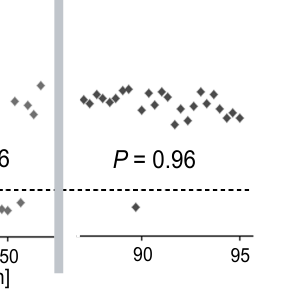

Phần II · Chương 6 — Bộ liên kết và tính dẻo synap
6 Bộ liên kết và tính dẻo khớp thần kinh
Cho đến nay, chúng ta đã bỏ qua một số cơ chế thú vị và trung tâm nhất của quá trình xử lý trong não, đó là tính dẻo khớp thần kinh (synaptic plasticity) và sự học trong các mạng. Các neuron được kết nối với nhau để tạo thành mạng, và một mạng thần kinh không chỉ được đặc trưng bởi cấu trúc liên kết (topology) của mạng, mà còn bởi độ mạnh kết nối, wij, giữa hai neuron hoặc hai nút quần thể (population nodes). Trong chương này, chúng ta thảo luận cách độ mạnh kết nối có thể thay đổi theo cách phụ thuộc vào mức độ sử dụng thông qua một hiện tượng sinh học gọi là tính dẻo khớp thần kinh. Tính dẻo khớp thần kinh là cơ sở vật lý của sự học trong các hệ thống thần kinh mà chúng ta sẽ thảo luận sau. Ở đây, chúng ta bắt đầu với một thảo luận chung về các bộ liên kết (associators), tóm tắt bản chất của các cơ chế tính dẻo và tầm quan trọng của chúng đối với quá trình xử lý nhận thức của não. Sau đó, chúng ta trình bày cơ sở sinh lý thần kinh của tính dẻo và một số mô hình cụ thể về tính dẻo. Phần cuối của chương này thảo luận một số hệ quả của các quy tắc tính dẻo, đặc biệt là các phân bố trọng số, và giải thích một số chiến lược điều chỉnh tỷ lệ trọng số (weight scaling) và suy giảm trọng số (weight decay). Chương kết thúc bằng một ứng dụng của quy tắc Hebb cơ bản với suy giảm trọng số vào phân tích thành phần chính (PCA).
6.1 Trí nhớ liên kết và học Hebb
Các mạng thần kinh được đặc trưng bởi một tập hợp các độ mạnh kết nối, wij, giữa các neuron hoặc các nút quần thể. Chúng ta có thể mã hóa kiến trúc mạng bằng một ma trận lớn chỉ định tất cả các trọng số giữa tất cả các nút trong mạng. Trọng số bằng 0 cho thấy không có kết nối hoạt động giữa hai neuron. Chúng ta có thể phân biệt một cách lỏng lẻo hai dạng tính dẻo:
• Tính dẻo cấu trúc (Structural plasticity) là cơ chế mô tả việc tạo ra các kết nối mới và qua đó định nghĩa lại cấu trúc liên kết của mạng. • Tính dẻo chức năng (Functional plasticity) là cơ chế thay đổi giá trị độ mạnh của các kết nối hiện có.
Ngoài ra, đôi khi việc phân biệt các cơ chế phát triển với các sự thích nghi ở sinh vật trưởng thành là hữu ích. Sự hình thành và duy trì các mạng neuron trong não phần lớn phải được mã hóa di truyền. Tuy nhiên, không phải tất cả các chi tiết đều có thể được mã hóa với số lượng gen khá nhỏ trong bộ gen người, ước tính vào khoảng 20.000–25.000, chưa kể quan điểm hiện nay cho rằng chỉ một tỷ lệ nhỏ trong số các gen này được cho là dùng để tạo ra các protein cụ thể hướng dẫn chức năng của sinh vật. Tuy nhiên, các gen có thể ảnh hưởng đến các chất thu hút (attractor substances) hướng dẫn sự phát triển của các sợi thần kinh (neurites) trong quá trình phát triển não và việc duy trì các khớp thần kinh, như sẽ thảo luận sau. Sự phát triển của não cũng có thể bị ảnh hưởng bởi các hoàn cảnh môi trường. Do đó, các cơ chế thích nghi được cho là rất quan trọng đối với các chức năng của não, ít nhất là để tinh chỉnh các tham số trong các mạng não.
Fundamentals of Computational Neuroscience. Third edition. Thomas P. Trappenberg, Oxford University Press. © Oxford University Press 2023. DOI:10.1093/oso/9780192869364.003.0006
Trong quá trình phát triển thần kinh của các loài động vật có vú, người ta cho rằng bộ não bắt đầu với mức độ kết nối rất cao và trong giai đoạn sơ sinh nhiều kết nối bị cắt tỉa. Ngoài ra, người ta cũng phát hiện ra rằng có những giai đoạn nhạy cảm (critical periods) mà trong đó sự phát triển bình thường của các tổ chức neuron cụ thể có thể dễ dàng bị xáo trộn. Việc tạo ra các tiếp xúc khớp thần kinh mới không chỉ đòi hỏi sợi trục mọc gần sợi nhánh, mà còn đòi hỏi sợi trục phát triển các vị trí giải phóng chất dẫn truyền, sợi nhánh tích hợp các kênh ion khớp thần kinh, và tế bào thần kinh đệm (glial cells) cung cấp chức năng hỗ trợ. Mặc dù sự phát triển não và tính dẻo cấu trúc là những lĩnh vực nghiên cứu quan trọng, nhiều thảo luận của chúng ta trong các chương sau tập trung vào khả năng của các mạng thích nghi nói chung, mà không phân biệt giữa các dạng tính dẻo khác nhau chắc chắn hiện diện trong các sinh vật. Phần lớn thảo luận sau đây liên quan đến các quy tắc học thường được quy cho tính dẻo chức năng.
6.1.1 Học Hebb
Ý tưởng rằng bộ não có thể thay đổi và thích nghi bằng cách xây dựng các liên kết đã xuất hiện từ cuối thế kỷ 19. Ví dụ, Sigmund Freud đã đề xuất quy luật liên kết theo tính đồng thời (law of association by simultaneity) vào năm 1888, rất giống với các nguyên lý chung được giải thích trong phần này. Tuy nhiên, vai trò trung tâm của học liên kết như một nguyên lý tổ chức trong não chỉ trở nên phổ biến sau này với một cuốn sách có ảnh hưởng lớn của nhà tâm lý học người Canada Donald O. Hebb. Trong cuốn sách của mình, The organization of behaviour, xuất bản năm 1949, ông thậm chí còn suy đoán về cách thức thực thi chức năng của sự học:
Khi một sợi trục của tế bào A ở đủ gần để kích thích tế bào B hoặc lặp đi lặp lại hay liên tục tham gia vào việc kích hoạt nó, một số thay đổi về tăng trưởng hoặc chuyển hóa sẽ diễn ra ở cả hai tế bào sao cho hiệu quả của A, với tư cách là một trong những tế bào kích hoạt B, được tăng lên.
Hebb không có phương tiện để quan sát trực tiếp các khớp thần kinh, điều này khiến giả thuyết của ông giống như một phỏng đoán táo bạo theo tiêu chuẩn của chúng ta. Nhưng cuốn sách của ông có ảnh hưởng lớn đến nhiều nhà nghiên cứu vì đây là một trong những đề xuất cụ thể đầu tiên về cách bộ não tự tổ chức để thực hiện các chức năng nhận thức làm nền tảng cho hành vi. Cụ thể, Hebb đề xuất rằng các tập hợp tế bào (cell assemblies), được hình thành một cách linh hoạt để đáp ứng với các kích thích bên ngoài, thực hiện phần lớn quá trình xử lý thông tin trong não. Ông lập luận rằng các cơ chế vật lý cơ bản hỗ trợ những thay đổi dẻo này trong não là một số thay đổi ở khớp thần kinh mà ông suy đoán là ‘một số thay đổi về tăng trưởng hoặc chuyển hóa’. Có lẽ thành phần quan trọng nhất trong giả thuyết của ông đối với chúng ta là cơ sở chức năng cho sự thay đổi này, đó là một mối tương quan có ý nghĩa chức năng giữa hoạt động tiền khớp (presynaptic) và hậu khớp (postsynaptic). Nhận thức sâu sắc quan trọng này được tóm tắt là ‘những gì phát xung cùng nhau, kết nối cùng nhau’ (what fires together, wires together). Mặc dù cụm từ này có thể được diễn giải thiên về tính dẻo cấu trúc, ở đây nó nên được hiểu theo nghĩa tính dẻo khớp thần kinh, hay theo nghĩa của Hebb, là những gì phát xung cùng nhau sẽ kết nối với nhau mạnh mẽ hơn. Chỉ gần đây hơn, sinh lý học của tính dẻo khớp thần kinh mới được quan sát chi tiết. Nghiên cứu mới hơn này cho thấy mô tả định tính của Hebb, như được trích dẫn ở trên, chính xác một cách đáng kinh ngạc và nắm bắt được hầu hết các nguyên lý tổ chức thiết yếu trong hệ thần kinh. Tính dẻo phụ thuộc vào hoạt động dựa trên hoạt động tiền khớp và hậu khớp thường được gọi là tính dẻo Hebb (Hebbian plasticity) hay học Hebb (Hebbian learning) để vinh danh Hebb.
i wi r out
Hình 6.1 Một neuron đơn giản hóa nhận một số lượng lớn đầu vào rin i . Hiệu quả khớp thần kinh được ký hiệu là wi và đầu ra của nút là rout.
6.1.2 Các liên kết
Một giả thuyết chính được định lượng bởi các mô hình tính toán là tính dẻo khớp thần kinh cho phép trí nhớ và sự học, như được thảo luận sâu rộng trong các chương sau. Trí nhớ của con người rất khác với trí nhớ của máy tính kỹ thuật số. Bộ nhớ trong máy tính kỹ thuật số bao gồm một thiết bị nơi thông tin được lưu trữ, tương tự như một cái kệ. Khi truy xuất thông tin từ bộ nhớ máy tính, chúng ta phải báo cho máy tính biết vị trí tìm thông tin này ở bên trong bằng một địa chỉ bộ nhớ. Việc không chỉ định chính xác địa chỉ bộ nhớ dẫn đến mất hoàn toàn thông tin này vì khi đó không thể truy xuất được. Ngay cả một lỗi chỉ một bit trong địa chỉ bộ nhớ cũng trở nên nghiêm trọng đối với việc truy xuất bộ nhớ. Các hệ thống tự nhiên không thể hoạt động với độ chính xác khắt khe như vậy.
Hệ thống trí nhớ của con người khác biệt ở nhiều khía cạnh so với bộ nhớ máy tính thông thường. Chúng ta thường có thể nhớ lại những ký ức sống động về các sự kiện từ những chi tiết nhỏ. Ví dụ, khi đến thăm một số nơi thời thơ ấu, rất có thể hình ảnh của những địa điểm đó, mặc dù không hoàn toàn giống như nhiều năm trước, sẽ kích hoạt những ký ức sống động về bạn bè và một số sự cố đã xảy ra tại những nơi này; một bức ảnh chỉ có một phần khuôn mặt của một người bạn có thể đủ để nhận ra anh ấy và nhớ lại tên của anh ấy, hoặc nếu ai đó nhắc đến tên của một người bạn, ta có thể nhớ ra một số đặc điểm khuôn mặt của người này. Trái ngược với máy tính kỹ thuật số, chúng ta có thể học các liên kết có thể kích hoạt ký ức dựa trên thông tin liên quan, tức là chỉ cần thông tin một phần là có thể đủ để nhớ lại ký ức. Chính loại trí nhớ này là thứ chúng ta cho là thiết yếu đối với các quá trình nhận thức của con người. Trong khi các nhà khoa học máy tính đôi khi gọi đây là bộ nhớ định địa chỉ theo nội dung (content addressable memory), chúng ta sẽ gọi chung đây là trí nhớ liên kết (associative memory) hoặc bộ liên kết (associator).
Tính dẻo khớp thần kinh là thành phần cần thiết đằng sau việc hình thành các liên kết, và bây giờ chúng ta sẽ minh họa ý tưởng chính của học liên kết Hebb bằng cách sử dụng một neuron đơn giản hóa như minh họa trong Hình 6.1. Sau này chúng ta sẽ sử dụng rộng rãi các cơ chế này trong các mạng liên kết, được minh họa trong Hình 6.2. Các kiến trúc liên kết như vậy đã được đề xuất vào khoảng năm 1960 một cách độc lập bởi Bernd Widrow (Madaline) và Karl Steinbuch (Lernmatrix). Mặc dù bây giờ chúng ta sử dụng ngôn ngữ của các neuron, các lập luận tương tự cũng áp dụng cho học liên kết trong các mạng gồm các nút quần thể, như được sử dụng chủ yếu trong các chương sau của cuốn sách này. Chúng ta chỉ hiển thị một vài sợi trục tiền khớp tạo khớp trên nút mô hình trong Hình 6.1. Tuy nhiên, điều quan trọng là phải ghi nhớ trong thảo luận sau đây rằng các neuron nhận đầu vào từ một số lượng lớn nguồn, như đã đề cập trước đó. Một neuron vỏ não nhận khoảng 5000–10.000 khớp thần kinh từ các neuron khác, mặc dù chỉ một tập hợp con nhỏ, ít hơn 1%, số kênh khớp thần kinh đang hoạt động có thể đủ để tạo ra một xung tiền khớp nếu hiệu quả khớp thần kinh đủ lớn và các sự kiện khớp thần kinh rơi vào các cửa sổ thời gian nhất định.
Hãy thảo luận ví dụ minh họa trong Hình 6.3. Ở đó, một sự kiện nhất định, chẳng hạn r in j wij r out i
Hình 6.2 Một mạng gồm các nút liên kết. Mỗi thành phần của vector đầu vào, rin i , được phân phối tới từng neuron trong mạng. Tuy nhiên, tác động của đầu vào có thể khác nhau đối với mỗi neuron vì mỗi khớp thần kinh riêng lẻ có thể có các giá trị hiệu quả wij khác nhau, trong đó j đánh dấu neuron trong mạng.
như sự hiện diện của một mùi cụ thể, được phản ánh qua việc phát xung của một tập hợp con các kênh đầu vào tới neuron (Hình 6.3A). Chúng ta chỉ sử dụng một tập hợp con nhỏ các neuron tiền khớp để biểu diễn kích thích đầu vào phù hợp với mã hóa phân tán nhưng thưa thớt (distributed, yet sparse, coding) sẽ được thảo luận thêm bên dưới. Trong Hình 6.3A, chúng ta biểu diễn kích thích mùi, chẳng hạn mùi từ bếp nướng BBQ khi nướng bánh hamburger, bằng một mẫu đầu vào biểu diễn các xung ở các kênh đầu vào 1, 3 và 5. Hiệu quả khớp thần kinh của các kênh đầu vào này được giả định là đủ lớn để tạo ra một xung hậu khớp. Ví dụ, chúng ta có thể lấy ngưỡng phát xung là θ = 1.5 và giả sử ban đầu chỉ các trọng số khớp thần kinh của các kênh đầu vào này có giá trị wi = 1, như minh họa ở phía bên phải của Hình 6.3A. Khi đó mẫu đầu vào đủ để tạo ra một xung hậu khớp. Điều này có thể dễ dàng kiểm chứng bằng cách so sánh mức kích hoạt bên trong của neuron,
X
wirin h = i = 3, (6.1)
i với ngưỡng phát xung của neuron (θ = 1.5). Các giá trị trọng số khớp thần kinh này cũng đủ để giúp neuron phát xung khi đáp ứng với đầu vào một phần. Ví dụ, nếu chỉ có kênh 1 và 3 bật, thì h = 2 > θ và neuron vẫn phát xung. Điều này rất quan trọng đối với các quá trình của não vì mẫu đầu vào có thể không phải lúc nào cũng đầy đủ do quá trình xử lý nhiễu hoặc thông tin cảm giác một phần. Bằng cách này, bộ não có thể đạt được sự hoàn thiện mẫu (pattern completion), khả năng hoàn thiện biểu diễn của một kích thích một phần.
Một kích thích khác, chẳng hạn như hình ảnh chiếc hamburger khi mở bếp BBQ, được biểu diễn trong mô hình như một đầu vào tiền khớp tới ba kênh đi vào cuối cùng trong Hình 6.3B, không thể tạo ra đáp ứng của neuron này với các giá trị trọng số khớp thần kinh hiện tại. Để liên kết tín hiệu thị giác của chiếc hamburger với mùi báo hiệu mùi của chiếc hamburger, chúng ta phải sửa đổi các trọng số khớp thần kinh. Để làm điều này, chúng ta áp dụng chiến lược sau:
Tăng độ mạnh của các khớp thần kinh lên một giá trị ∆w = 0.1 nếu một xung tiền khớp đi cặp với một xung hậu khớp.
A.
B.
C.
in r in in w in r r w w r w
0 0 0 0 0 0 0 1 1 1
1 0 1 0 1 0 0 1 1 1
0 0 0 0 0 0 0 1 1 1
1 0 1 0 1 0 0 0 0 0
1 0 1 0 1 0 0 0 0 0
1.1 0 1.1 0 1.1 0 0 0.1 0.1 0.1
1.6 0 1.6 0 1.6 0 0 0.6 0.6 0.6
1 0 1 0 1 0 0 0 0 0
out out out out r = 0 r = 1 r = 1 r = 1
Hình 6.3 Các ví dụ về một nút liên kết được huấn luyện trên hai vector đặc trưng bằng thuật toán học kiểu Hebb giúp tăng độ mạnh khớp thần kinh lên ∆w = 0.1 mỗi lần một xung tiền khớp xảy ra trong cùng cửa sổ thời gian với một xung hậu khớp.
Quy tắc học này sửa đổi các trọng số khớp thần kinh, sao cho sau một lần trình diện đồng thời cả hai kích thích, tín hiệu thị giác và tín hiệu biểu diễn mùi, các trọng số có giá trị minh họa trong Hình 6.3C. Sau sáu lần lặp học liên tiếp, chúng ta thu được các trọng số khớp thần kinh như trong Hình 6.3D. Tốc độ đạt đến điểm này phụ thuộc vào tốc độ học (learning rate), mà trong ví dụ này chúng ta đặt là 0.1.
Chỉ riêng tín hiệu thị giác của chiếc hamburger là đủ để tạo ra đáp ứng của neuron sau chỉ 5 hoặc 6 lần trình diện đồng thời cả hai kích thích. Việc phát xung của neuron này khi đó được liên kết với cả sự hiện diện của hình ảnh thị giác của chiếc hamburger và sự hiện diện của tín hiệu biểu diễn mùi của chiếc hamburger. Nếu neuron này, hoặc neuron này kết hợp với các neuron khác trong mạng, tạo ra một hình ảnh tâm trí về chiếc hamburger, thì sự hiện diện của chỉ một tín hiệu, mùi hoặc hình ảnh của chiếc hamburger, là đủ để gợi lên hình ảnh tâm trí về chiếc hamburger. Do đó, mùi và hình ảnh thị giác của chiếc hamburger được liên kết với hình ảnh tâm trí của nó. Những liên kết như vậy là nền tảng cho nhiều quá trình nhận thức.
6.1.3 Học Hebb trong khuôn khổ điều kiện hóa
Các cơ chế của một bộ liên kết, như đã phác thảo ở trên, dựa trên thực tế là kích thích đầu tiên, mùi của chiếc hamburger, vốn đã có hiệu quả trong việc tạo ra đáp ứng của neuron trước khi học. Đây là một giả định hợp lý vì chúng ta có thể bắt đầu với các mạng ngẫu nhiên trong đó một số neuron sẽ đáp ứng với kích thích này trước khi học. Do đó, chúng ta có thể giả sử rằng mình đã chọn một neuron như vậy trong ví dụ của chúng ta từ một tập hợp lớn các neuron đáp ứng với đủ loại kích thích, dựa trên phân bố trọng số ban đầu ngẫu nhiên. Mặc dù độ mạnh khớp thần kinh của các kênh đầu vào này thay đổi theo quy tắc học, chúng ta gọi kích thích ban đầu là kích thích không điều kiện (UCS) vì đáp ứng của neuron đối với kích thích này được duy trì. Lý do chính cho việc đặt nhãn này là chúng ta muốn phân biệt đầu vào này, vốn đã có hiệu quả, với kích thích thứ hai, hình ảnh thị giác của chiếc hamburger. Đối với đầu vào thứ hai, đáp ứng của neuron thay đổi trong quá trình học, và vì vậy chúng ta gọi kích thích thứ hai là kích thích có điều kiện (CS). Vector đầu vào tới hệ thống do đó là một hỗn hợp của UCS và CS như minh họa trong Hình 6.4A.
Một số biến thể của sơ đồ này được biết là xảy ra trong các hệ thần kinh sinh học. Một trong số đó được phác thảo trong Hình 6.4B. Chúng ta đã nhấn mạnh rằng điều cốt yếu đối với UCS trong sơ đồ trước là tạo ra một đáp ứng thần kinh hậu khớp, điều này được đưa vào ví dụ trên bằng cách sử dụng các khớp thần kinh đủ mạnh trong các kênh đầu vào của UCS. Một cách khác, như minh họa trong Hình 6.4B, các sợi mang UCS có thể có nhiều khớp thần kinh lên sợi nhánh hậu khớp để có thể đảm bảo việc phát xung của nút. Ví dụ, các sợi rêu (mossy fibres) trong hồi hải mã (hippocampus) là các sợi trục tạo ra các tiếp xúc rất mạnh với các neuron hậu khớp. Một ví dụ khác là các sợi leo (climbing fibres) trong tiểu não, có hàng trăm khớp thần kinh với một tế bào Purkinje duy nhất. Tiểu não có liên quan đến việc học vận động, và người ta đã gợi ý rằng UCS cung cấp một tín hiệu lỗi vận động cho các cơ chế học như vậy. Chúng ta sẽ trình bày chi tiết về điều này trong Chương 10.
A. Neuron vỏ não mới
B. Neuron Purkinje
C. Neuron động vật không xương sống
wi
CS UCS
CS
CS
UCS
UCS
r out r out r out
Hình 6.4 Các mô hình khác nhau của nút liên kết giống với kiến trúc chính được tìm thấy trong các hệ thần kinh sinh học như (A) các neuron vỏ não ở vỏ não động vật có vú và (B) các tế bào Purkinje trong tiểu não, vốn có đầu vào mạnh từ các sợi leo thông qua hàng trăm hoặc hàng nghìn khớp thần kinh. Ngược lại, mô hình như trong (C) sử dụng đầu vào cụ thể tới một đầu tận cùng tiền khớp như đã biết tồn tại trong các hệ thống động vật không xương sống, sẽ phải cung cấp UCS tới tất cả các khớp thần kinh cùng lúc để đạt được kết quả tương tự như trong hai mô hình trước. Các kiến trúc như vậy khó có khả năng đóng vai trò quan trọng trong xử lý ở vỏ não.
Một mô hình khác được minh họa trong Hình 6.4C. Ở đây, chúng ta đã chỉ ra một cơ chế điều biến cụ thể sử dụng một đầu vào riêng biệt tới các đầu tận cùng tiền khớp, có thể gây ra các thay đổi tiền khớp. Các cơ chế như vậy tồn tại ở động vật không xương sống, ví dụ, trong hệ thống cảm giác-vận động của sên biển Aplysia. Các cơ chế như vậy có thể đặc hiệu cho từng đầu tận cùng tiền khớp và do đó theo định nghĩa là phi Hebb (non-Hebbian). Để đạt được kết quả tương tự như trong hai mô hình kia, vốn phụ thuộc toàn cục vào sự phát xung của neuron hậu khớp, chúng ta sẽ phải cung cấp tín hiệu UCS tới tất cả các đầu vào khớp thần kinh cùng lúc. Một kiến trúc như vậy phức tạp hơn nhiều để thực hiện trong các hệ thần kinh lớn hơn và dường như không có trong hệ thần kinh động vật có xương sống. Điều này chứng tỏ rằng các cơ chế khớp thần kinh và nguyên lý xử lý thông tin khác nhau có thể hiện diện trong hệ thần kinh động vật có xương sống và động vật không xương sống.
Ví dụ trong Hình 6.3 minh họa rằng có thể lưu trữ thông tin bằng học liên kết; sau khi ghi dấu một mẫu sự kiện–đáp ứng, đáp ứng có thể được nhớ lại từ thông tin một phần về sự kiện. Đây là lý do chính khiến tính dẻo khớp thần kinh được cho là nguyên lý nền tảng đằng sau trí nhớ liên kết và các khả năng xử lý thông tin quan trọng khác trong não. Tất nhiên, quy tắc học cơ bản được sử dụng ở trên phải được mở rộng để kết hợp các chi tiết quan trọng chưa được nắm bắt trong ví dụ. Ví dụ, quy tắc học được phác thảo trong ví dụ đã tăng tất cả các trọng số khớp thần kinh liên quan. Sự tăng cường khớp thần kinh (synaptic potentiation) này dẫn đến sự gia tăng toàn bộ vector trọng số sau một thời gian nếu việc trình diện nhiều vector đầu vào khác nhau đi kèm với sự phát xung ngẫu nhiên của nút hậu khớp. Khi đó các trọng số khớp thần kinh sẽ trở nên cực kỳ lớn và do đó đáp ứng của nút trở nên không đặc hiệu với các mẫu đầu vào vì nó sẽ đáp ứng với đầu vào nhiễu. Do đó, một dạng làm yếu khớp thần kinh nào đó, gọi là sự ức chế khớp thần kinh (synaptic depression), bao gồm một số sự ức chế cạnh tranh giữa các khớp thần kinh, là rất quan trọng. Ngoài ra, cấu trúc thời gian của mẫu phát xung có thể có liên quan trong quy tắc học, như Hebb đã gợi ý. Chúng ta sẽ điểm qua các phát hiện thực nghiệm gần đây xác minh giả thuyết này trong phần tiếp theo.
6.1.4 Các đặc điểm của bộ liên kết và học Hebb
Các liên kết, cùng với một dạng biểu diễn phân tán nào đó được thảo luận thêm trong Chương 7, dẫn đến các đặc tính quan trọng của mạng gồm các nút liên kết. Những đặc tính này rất thiết yếu cho việc xử lý thông tin kiểu não và việc mô hình hóa các quá trình nhận thức. Sau đây là tóm tắt ngắn gọn về các đặc tính như vậy mà chúng ta sẽ nghiên cứu thêm ở các phần khác nhau của cuốn sách này.
Hoàn thiện mẫu và khái quát hóa
Chúng ta đã thấy rằng một kích thích chỉ nắm bắt một phần của mẫu liên kết với một đối tượng vẫn có thể kích hoạt ký ức về đối tượng đó. Điều này có nghĩa là các mạng hỗ trợ việc nhớ lại các chi tiết của một đối tượng vốn không nằm trong kích thích. Khả năng nhớ lại từ đầu vào một phần này còn được gọi là hoàn thiện mẫu (pattern completion). Nó dựa trên một biểu diễn phân tán của kích thích đối tượng sao cho một số thành phần bị thiếu của vector đặc trưng có thể được bổ sung. Hoàn thiện mẫu dựa trên việc tính toán một dạng chồng lấp (overlap), hay độ tương đồng, của một vector đầu vào với một vector trọng số biểu diễn mẫu mà nút đã được huấn luyện trên đó. Một ví dụ về thước đo độ tương đồng như vậy là tích vô hướng giữa vector đầu vào mẫu và vector hiệu quả khớp thần kinh. Chúng ta cũng cần tính phi tuyến trong hàm đầu ra, chẳng hạn như ngưỡng phát xung, vốn là đặc trưng của các neuron và quần thể neuron. Khi đó, miễn là độ chồng lấp giữa mẫu đầu vào và mẫu đã huấn luyện đủ lớn, một đầu ra sẽ được tạo ra tương đương với đầu ra của mẫu đã huấn luyện. Do đó, nút đầu ra đáp ứng với tất cả các mẫu có độ tương đồng nhất định với mẫu đã huấn luyện, một khả năng được gọi là khái quát hóa (generalization).
Nguyên mẫu và trích xuất xu hướng trung tâm
Một khả năng liên quan chặt chẽ của các nút liên kết, hoặc mạng liên kết, là khả năng trích xuất xu hướng trung tâm. Điều này xảy ra khi huấn luyện các nút liên kết trên nhiều ví dụ tương tự nhau nhưng không hoàn toàn giống nhau. Khi đó vector trọng số biểu diễn một giá trị trung bình trên các ví dụ này, mà chúng ta có thể diễn giải như một nguyên mẫu (prototype). Các tập huấn luyện như vậy là điển hình trong môi trường tự nhiên. Ví dụ, mỗi người có một khuôn mặt riêng, nhưng vẫn có nhiều đặc điểm chung ở tất cả các khuôn mặt. Một lý do khác cho các tập huấn luyện có nhiều mẫu hơi khác nhau là tập huấn luyện được trích xuất từ cùng một đối tượng, vốn được biểu diễn theo thời gian với các mẫu dao động do một số quá trình nhiễu trong quy trình mã hóa. Khả năng trích xuất nguyên mẫu của các bộ liên kết khi đó có thể được sử dụng để giảm nhiễu, một khả năng quan trọng trong trường hợp các hệ thống xử lý có nhiễu, chẳng hạn như bộ não và các ứng dụng công nghệ.
Suy giảm duyên dáng
Sự mất mát hoặc không chính xác của một số thành phần trong hệ thống thần kinh, chẳng hạn như một số kết nối khớp thần kinh hoặc thậm chí toàn bộ neuron, không nên ảnh hưởng rõ rệt đến hệ thống. Các mạng liên kết thường suy giảm một cách duyên dáng (degrade gracefully) ở chỗ một lượng lớn khớp thần kinh phải bị loại bỏ trước khi hệ thống tạo ra một lượng lỗi lớn. Ngay cả việc mất các nút cũng có thể được dung thứ nếu thông tin đi vào một lớp xử lý phía trên có khả năng liên kết có thể thực hiện hoàn thiện mẫu từ thông tin một phần. Khả năng chịu lỗi như vậy là thiết yếu trong các hệ thống sinh học.
6.2 Sinh lý học và lý sinh học của tính dẻo khớp thần kinh
Trong Chương 4, chúng ta đã điểm qua cách một xung kích hoạt việc giải phóng chất dẫn truyền thần kinh ở các khớp thần kinh hóa học, qua đó các xung tiền khớp có thể ảnh hưởng đến trạng thái của các neuron hậu khớp. Trong phần này, chúng ta điểm qua ngắn gọn sinh lý học và các cơ chế sinh hóa được cho là tham gia vào việc thay đổi đặc tính đáp ứng của neuron, với trọng tâm là tính dẻo chức năng phụ thuộc hoạt động. Chúng ta nên ghi nhớ khả năng rằng một số thành phần của bộ máy khớp thần kinh có thể thay đổi trong các thí nghiệm tính dẻo. Các thay đổi có thể xảy ra bao gồm số lượng vị trí giải phóng, xác suất giải phóng chất dẫn truyền thần kinh, số lượng thụ thể chất dẫn truyền, và độ dẫn cũng như động học của các kênh ion.
6.2.1 Các thí nghiệm tính dẻo điển hình
Những thay đổi kéo dài về đặc tính đáp ứng khớp thần kinh, bao gồm biên độ trung bình và độ trễ của EPSP, lần đầu tiên được chứng minh bằng thực nghiệm vào năm 1973 bởi Timothy Bliss và Terje Lømo trong các môi trường nuôi cấy hồi hải mã. Một số kết quả minh họa của các thí nghiệm tính dẻo điển hình như vậy được trình bày trong Hình 6.5A. Các thí nghiệm được trình bày dựa trên phép đo điện thế trường gợi lên (evoked field potentials - EFP) ở thể vân (striatum) của chuột, một cấu trúc dưới vỏ não tham gia vào việc điều khiển vận động. Đồ thị cho thấy sự thay đổi biên độ EFP, so với các phép đo trung bình ban đầu (ở đây tại các thời điểm từ t = −10 phút đến t = 0 phút). Tại thời điểm t = 0, một kích thích tần số cao được áp dụng. Việc ghi nhận biên độ EFP sau chuỗi kích thích liên tục (tetanus) gây tính dẻo này cho thấy biên độ EFP tăng lên. Mặc dù đáp ứng mạnh ban đầu thường sẽ suy giảm phần nào sau vài phút, nhiều thí nghiệm đã cho thấy các hiệu ứng kéo dài hàng giờ, hàng ngày hoặc lâu hơn, vốn là rất lâu trên thang thời gian xử lý của não. Những thay đổi về hiệu quả khớp thần kinh như vậy do đó
B. Ức chế dài hạn
A. Tăng cường dài hạn
Thay đổi biên độ EFP [%]
140
Thay đổi biên độ EFP [%]
180
120
160
100
140
80
120
60
100
40
80
-10 10 20 30 0
-10 10 20 30 0
Thời gian [phút]
Thời gian [phút]
Hình 6.5 (A) Thay đổi điện thế trường gợi lên ở thể vân sau một kích thích tần số cao tại thời điểm t = 0. (B) Minh họa LTD trong các thí nghiệm tương tự [phỏng theo Dang, Yokoi, Yin, Lovinger, Wang, và Li, Proceedings of the National Academy of Science 103: 15254–9 (2006)].
được gọi là tăng cường dài hạn (long-term potentiation - LTP) vì biên độ trung bình của EPSP tăng lên. Các thí nghiệm khác đã chỉ ra rằng những thay đổi dài hạn có thể mang dấu âm hoặc dương. Ví dụ, các kích thích với tần số thấp tại t = 0 dẫn đến việc làm giảm biên độ EFP trung bình. Một ví dụ được trình bày trong Hình 6.5B. Những thay đổi kéo dài như vậy được gọi là ức chế dài hạn (long-term depression - LTD). Các cơ chế như vậy có thể hỗ trợ các liên kết đã thảo luận trong phần trước. Cụ thể, LTP có thể củng cố các đáp ứng liên kết đối với một mẫu phát xung tiền khớp được liên kết về mặt thời gian với sự phát xung hậu khớp, trong khi LTD có thể tạo điều kiện cho việc xóa bỏ (unlearning) đầu vào tiền khớp không nhất quán với sự phát xung hậu khớp. Thú vị là các thí nghiệm này của Dang và cộng sự cũng cho thấy rằng việc ngăn chặn LTP ở thể vân làm gián đoạn việc học các kỹ năng vận động mà thể vân có liên quan.
Những thay đổi về biên độ EFP không phải là hiệu ứng duy nhất được đo trong các thí nghiệm tính dẻo. Bliss và Terje Lømo đã lưu ý rằng độ trễ của các đáp ứng xung hậu khớp gợi lên có thể bị ảnh hưởng. Ngoài ra, các thí nghiệm gần đây của Alan Fine và Ryosuke Enoki trên các lát cắt hồi hải mã của chuột cống đã chỉ ra rằng xác suất giải phóng chất dẫn truyền có thể được điều biến trong các thí nghiệm tính dẻo. Một số kết quả từ các thí nghiệm của họ được minh họa trong Hình 6.6. Hình 6.6A cho thấy diễn biến theo thời gian của các đáp ứng EPSP đối với các cặp kích thích tiền khớp. Một cặp kích thích thăm dò đã được sử dụng vì người ta thường quan sát thấy xung thứ hai có hiệu quả hơn xung thứ nhất trong việc tạo ra đáp ứng hậu khớp. Đây là một dạng tính dẻo ngắn hạn được gọi là tạo thuận xung cặp (paired-pulse facilitation). Sau khi đo đáp ứng ban đầu ở neuron, một kích thích tần số cao được áp dụng, được chỉ báo bằng các thanh dọc trong hình. Sự gia tăng biên độ EPSP sau kích thích tần số cao tương tự như những gì thấy trong các thí nghiệm đã thảo luận trước đó. Các thí nghiệm này cũng cho thấy sự tăng cường thêm đã đạt được với một kích thích tần số cao khác.
Các nhà nghiên cứu cũng chụp ảnh các khớp thần kinh đơn lẻ bằng thuốc nhuộm huỳnh quang nhạy cảm canxi. Diễn biến theo thời gian của các thay đổi huỳnh quang được vẽ trong Hình 6.6B. Mặc dù các phép đo này cũng cho thấy tác động của tạo thuận xung cặp, các biên độ
Kích thích tần số cao A.
EPSP [mV] ∆Huỳnh quang [%]
3
0
100 Thời gian [ms]
B.
100
0
100
Thời gian [ms]



C.
150
∆Huỳnh quang [%]
100
P = 0.96 P = 0.76 P = 0.4
50
0
0 5 45 50 90 95
Thời gian [phút]
Hình 6.6 Thí nghiệm tính dẻo trên các lát cắt hồi hải mã trong đó không chỉ EPSP được đo, mà ngoài ra, các tín hiệu huỳnh quang phụ thuộc canxi hậu khớp tại các khớp thần kinh đơn lẻ cũng được chụp ảnh [dữ liệu do Alan Fine và Ryosuke Enoki cung cấp].
có thể so sánh được sau mỗi chuỗi kích thích LTP và do đó không cho thấy sự gia tăng khớp thần kinh tỷ lệ thuận với sự gia tăng EPSP. Tuy nhiên, chúng đáp ứng một cách trung thực khi chất dẫn truyền được giải phóng khỏi đầu tận cùng tiền khớp. Một hiệu ứng quan trọng của chuỗi kích thích LTP có thể thấy trong Hình 6.6C. Hình này cho thấy sự thay đổi huỳnh quang qua nhiều lần thử trong các giai đoạn khác nhau của thí nghiệm. Kết quả cho thấy không phải mọi kích thích tiền khớp đều tạo ra một đáp ứng hậu khớp; tỷ lệ số lần quan sát thấy một sự kiện hậu khớp có thể được đánh đồng với xác suất giải phóng chất dẫn truyền, như đã đề cập trong Mục 4.2. Hơn nữa, xác suất giải phóng tăng lên đáng kể sau mỗi kích thích tần số cao. Các thí nghiệm khác của nhóm đã chỉ ra rằng xác suất giải phóng có thể bị thay đổi theo hai chiều, tăng xác suất với các kích thích tần số cao và giảm xác suất khi các kích thích được ghép cặp theo một cách cụ thể với các xung hậu khớp như sẽ thảo luận trong phần tiếp theo. Ưu điểm của kỹ thuật chụp ảnh là các kết quả trong Hình 6.6B và C có thể được quy cho một khớp thần kinh đơn lẻ, trong khi các phép đo EPSP có khả năng đo tác động của nhiều khớp thần kinh. Sự gia tăng biên độ EPSP do đó có thể là một hiệu ứng quần thể, trong đó xác suất tăng lên của việc có được một sự kiện hậu khớp ở mỗi khớp trong số nhiều khớp thần kinh có thể làm tăng hiệu ứng tổng hợp khi đo EPSP ở thân tế bào.
6.2.2 Tính dẻo phụ thuộc thời điểm xung
Các thí nghiệm tính dẻo cổ điển đã thảo luận ở trên thường sử dụng các kích thích tiền khớp tần số cao để gây ra LTP và các kích thích tần số thấp hơn để gây ra LTD. Các kích thích này cần đủ mạnh để ‘dẫn dắt’ neuron hậu khớp, phản ánh định đề của Hebb về mối quan hệ nhân quả giữa các xung hậu khớp và tiền khớp. Henry Markram, và những người khác, đã nghiên cứu sâu hơn mối quan hệ nhân quả cần thiết giữa việc phát xung tiền khớp và hậu khớp bằng cách thay đổi thời gian giữa các xung tiền khớp và hậu khớp được gây ra từ bên ngoài. Một kết quả minh họa của các thí nghiệm như vậy trên nuôi cấy hồi hải mã của Guo-chiang Bi và Mu-ming Poo được trình bày trong Hình 6.7A. Các phép đo được thực hiện trong chế độ kẹp điện thế (voltage clamp) nên dòng điện được đo ở đây. Dữ liệu cho thấy những thay đổi tương đối của biên độ EPSC đối với các giá trị khác nhau của độ chênh lệch thời gian giữa xung tiền khớp và hậu khớp, ∆t. Những kết quả này chỉ ra rằng có một cửa sổ thời gian tới hạn cho tính dẻo vào khoảng |∆t| ≈40 ms. Không thể phát hiện thấy tính dẻo khớp thần kinh nào đối với các độ chênh lệch thời điểm xung tiền khớp và hậu khớp có giá trị tuyệt đối lớn hơn nhiều so với cửa sổ thời gian này. Những thay đổi về biên độ dòng hậu khớp kích thích (EPSC) là lớn nhất đối với các độ chênh lệch dương nhỏ (LTP) hoặc âm nhỏ (LTD) trong thời điểm xung tiền khớp và hậu khớp. Sự suy giảm của tính dẻo khớp thần kinh có thể được khớp khá tốt bằng một hàm suy giảm mũ theo giá trị tuyệt đối của độ chênh lệch giữa các thời điểm xung.
Mặc dù dữ liệu trong Hình 6.7A thu được từ các tế bào hồi hải mã trong ống nghiệm (in vitro), các mối quan hệ tương tự cũng đã được tìm thấy trong các lát cắt vỏ não mới, cũng như trong cơ thể sống (in vivo), với kích thước cửa sổ tính dẻo tương tự. Tuy nhiên, dạng bất đối xứng của tính dẻo Hebb, được minh họa lại một cách sơ đồ hóa ở bên phải Hình 6.7A, không phải là dạng duy nhất có thể có đối với sự phụ thuộc của tính dẻo khớp thần kinh vào thời điểm xung tương đối. Một số ví dụ bổ sung được minh họa sơ đồ hóa trong Hình 6.7B–E. Người ta biết đến các ví dụ trong đó cửa sổ chênh lệch tới hạn cho LTD lớn hơn nhiều so với cửa sổ cho LTP, như được minh họa sơ đồ hóa trong Hình 6.7B. LTP và LTD cũng có thể bị đảo ngược tương đối so với sự chênh lệch trong phát xung tiền khớp và hậu khớp (Hình 6.7C). Ví dụ, các độ chênh lệch dương trong thời điểm xung gây ra LTD khi tính dẻo khớp thần kinh được kích hoạt ở các tế bào Purkinje trong tiểu não. Các tế bào Purkinje được biết là có tính ức chế, và những thay đổi như vậy do đó có thể làm giảm sự ức chế ở các mục tiêu của tế bào Purkinje. Cũng có những ví dụ về tính dẻo Hebb đối xứng được minh họa trong Hình 6.7D và E. Các cửa sổ tính dẻo như vậy dường như phù hợp hơn khi xem xét các neuron phát xung thành chùm (bursting neurons). Điều quan trọng đối với các nhà khoa học thần kinh tính toán là khám phá các vai trò chức năng của các dạng tính dẻo Hebb khác nhau.
6.2.3 Giả thuyết canxi và mô hình hóa các con đường hóa học
Các thí nghiệm sinh lý học được mô tả ở trên minh họa các hệ quả, xét về mặt hiệu quả khớp thần kinh, khi các khớp thần kinh tiếp xúc với các kích thích cụ thể. Mặc dù điều này phù hợp nhất để hiểu các hệ quả chức năng của tính dẻo khớp thần kinh mà chúng ta sẽ khám phá sau trong cuốn sách này, việc hiểu các cơ chế dẫn đến các phát hiện đã thảo luận ở trên cũng rất quan trọng. Mặc dù vẫn còn nhiều điều chưa biết, canxi là một thành phần quan trọng. Cụ thể, Artola và Singer, và trước đó là John Lisman, đã đưa ra giả thuyết rằng các mức canxi khác nhau kích hoạt các con đường sinh hóa khác nhau, như minh họa trong Hình 6.8. Canxi kích hoạt quá trình phosphoryl hóa
A. Tính dẻo phụ thuộc thời điểm xung
Thay đổi biên độ EPSC [%]
100
LTP
80
Δw
60
40 t −t post pre
20
0
LTD
0
−20
−60
−80 −80
80 40 0 −40
t −t post pre [ms]
t −t post pre [ms]
C. LTP
B. LTP
Δw
Δw
t −t post pre t −t post pre
LTD
LTD
0
0
D.
E. LTP
LTP
Δw
Δw
t −t post pre t −t post pre
LTD
LTD
0
0
Hình 6.7 (A) Những thay đổi tương đối về biên độ dòng hậu khớp kích thích (EPSC) đối với các độ chênh lệch thời gian khác nhau giữa thời điểm của một xung tiền khớp được kích hoạt và thời điểm của một xung hậu khớp được kích hoạt [dữ liệu được vẽ lại từ Bi và Poo, Journal of Neuroscience 18: 10464–72 (1998)]. Dạng tính dẻo được cách điệu ở bên phải. (B–E) Một số ví dụ về sự phụ thuộc sơ đồ hóa của hiệu quả khớp thần kinh vào mối quan hệ thời gian giữa các xung tiền khớp và hậu khớp [phỏng theo Abbott và Nelson, Nature Neuroscience 3: 1178–83 (2000)].
các protein thông qua các enzyme như CaM kinase II, có thể làm thay đổi hiệu quả của các thụ thể AMPA hiện có và có thể thúc đẩy việc chèn thêm các kênh AMPA mới về lâu dài. Cụ thể, mức canxi cao thúc đẩy LTP thông qua quá trình phosphoryl hóa, trong khi mức canxi vừa phải dẫn đến quá trình khử phosphoryl hóa và LTD. Điều này nhất quán với các phát hiện của Artola và Singer về các điều kiện dẫn đến LTP và LTD, mà chúng ta sẽ mô tả các quy tắc học tương ứng trong phần tiếp theo.
Để liên hệ giả thuyết này với hoạt động của các neuron, chúng ta cần suy nghĩ về các cơ chế ảnh hưởng đến mức canxi hậu khớp. Có một số nguồn cung cấp Ca2+ hậu khớp, như được sơ đồ hóa trong Hình 6.8. Sự gắn kết của glutamate có thể ảnh hưởng trực tiếp đến mức canxi hậu khớp theo hai cách. Thứ nhất, điều này xảy ra thông qua các thụ thể AMPA đóng mở các kênh ion có độ thấm Ca2+ nhất định, nhưng mức Ca2+ hậu khớp thu được từ nguồn này được cho là ở mức vừa phải. Thứ hai, glutamate kích hoạt giải phóng Ca2+ từ các kho dự trữ Ca2+ bên trong. Những nguồn Ca2+ này được kích hoạt gián tiếp bởi sự gắn kết glutamate. Sự gắn kết glutamate cũng dẫn đến tăng điện thế màng, có thể gián tiếp cho phép Ca2+ đi vào qua các kênh Ca2+ đóng mở theo điện thế (VGCC). Cuối cùng, dòng Ca2+ đi vào lớn nhất được cho phép thông qua các kênh NMDAR

AMPA
Kho Ca
cao LTP
[Ca ] 2+
NMDA
Mg
thấp
LTD
VGCC
Hình 6.8 Minh họa giả thuyết canxi phát biểu rằng mức canxi cao thúc đẩy LTP, trong khi mức vừa phải dẫn đến LTD. Hình bao gồm các nguồn canxi hậu khớp phổ biến và chỉ ra rằng canxi thúc đẩy các protein kinase trong nhân tế bào.
Tuy nhiên, như đã thảo luận trước đó, các kênh NMDAR bị chặn, ngay cả sau khi giải phóng glutamate, bởi các ion magie (Mg2+). Chỉ một sự khử cực hậu khớp mạnh mới loại bỏ được sự tắc nghẽn này, cho phép Ca2+ hậu khớp tăng mạnh. Sự khử cực mạnh cần thiết của điện thế màng có khả năng được cung cấp bởi các điện thế hoạt động lan truyền ngược (BAPs), như đã đề cập trước đó. Do đó, các kênh NMDAR cung cấp các cơ chế cho một điều kiện Hebb, đó là hoạt động tiền khớp (được chỉ báo bằng việc glutamate gắn vào NMDAR) và hoạt động hậu khớp (được chỉ báo bằng BAPs).
Giả thuyết cho rằng NMDAR và Ca2+ hậu khớp tham gia vào tính dẻo khớp thần kinh được củng cố bởi các chứng minh cho thấy việc phong tỏa NMDAR bằng các thuốc đối kháng, hoặc ngăn chặn sự gia tăng nồng độ canxi hậu khớp, sẽ triệt tiêu tính dẻo khớp thần kinh. Lưu ý rằng chúng ta chủ yếu thảo luận các cơ chế hậu khớp của tính dẻo kéo dài. Tuy nhiên, như đã đề cập trước đó, có bằng chứng cho thấy các sửa đổi tiền khớp rất quan trọng đối với tính dẻo khớp thần kinh và sự học. Ví dụ, sự điều biến xác suất giải phóng chất dẫn truyền đã đề cập ở trên có thể hỗ trợ các thay đổi hậu khớp kéo dài hoặc đóng góp vào sự học và xử lý thông tin theo cách riêng của nó. Cũng có thể các quá trình hậu khớp ảnh hưởng đến các quá trình tiền khớp thông qua các tế bào thần kinh đệm bọc quanh các khớp thần kinh và tương tác với cả hai phía tiền khớp và hậu khớp thông qua các khớp nối hóa học và điện học trực tiếp cùng các kênh Ca2+ khác. Một ảnh hưởng tiền khớp trực tiếp cũng có thể xảy ra thông qua các chất truyền tin ngược dòng (retrograde messengers) như oxit nitric (NO). Các cơ chế truyền thông tin ngược từ đầu tận cùng hậu khớp về các nút tiền khớp (presynaptic boutons) như vậy không cần thiết trong các hệ thống động vật không xương sống có các đầu tận cùng cụ thể trên các nút tiền khớp (Hình 6.4C). Những thay đổi tiền khớp trong tính dẻo khớp thần kinh dường như quan trọng trong các hệ thống như vậy thông qua việc giải phóng chất dẫn truyền được liên kết về mặt thời gian của đầu vào UCS và sự kích hoạt một đầu tận cùng tiền khớp cụ thể.
Có thể mô hình hóa trực tiếp các con đường hóa học nội bào liên quan đến tính dẻo khớp thần kinh. Một ví dụ về các con đường hóa học ở thụ thể D1 của các neuron gai (spiny neurons) ở thể vân được trình bày trong Hình 6.9, như được tóm tắt bởi Nakano, Doi, Yoshimoto, và Doya. Các khớp thần kinh này đặc biệt thú vị vì chúng không chỉ được điều hòa bởi glutamate, mà còn bởi đầu vào dopamine (DA) từ chất đen (substantia nigra). Các thí nghiệm của Jeff Wickens và các đồng nghiệp đã chỉ ra rằng chỉ riêng kích thích đầu vào vỏ não
GluR D1R
mGluR VDCC
Gq
Golf
PLC
AC
IP3
cAMP
Ca2+
ER
CaMKII
PDE
CaM
PKA
PP2A
PP2B
Vòng phản hồi dương
Loop
Thr-75
CDK5
CK1
Ser-137
DARPP-32
PP2C
Thr-34
PP1
I-1
Hình 6.9 Các con đường truyền tín hiệu ở thụ thể D1 của các neuron gai thể vân [phỏng theo Nakano, Doi, Yoshimoto, và Doya, Society for Neuroscience 676.5 (2007)].
dẫn đến LTD. Chỉ khi kết hợp với đầu vào DA mới có thể gây ra LTP. Nakano và cộng sự đã mô hình hóa mạng truyền tín hiệu trong Hình 6.9 dựa trên sự vận chuyển thụ thể AMPA, việc chèn các thụ thể AMPA khi được phosphoryl hóa bởi các kinase và loại bỏ khi được khử phosphoryl hóa bởi các phosphatase trong khi được điều hòa bởi nồng độ DA và Ca2+. Các tác giả đã tìm thấy tính dẻo phụ thuộc vào DA và Ca2+, với mức thấp dẫn đến LTD và mức cao dẫn đến LTP. Chúng ta sẽ quay lại các sự phụ thuộc như vậy trong Mục 6.3.2.
6.3 Biểu diễn toán học của tính dẻo Hebb
Trong các mô hình mạng thần kinh, tính dẻo khớp thần kinh được mô tả bằng sự thay đổi các giá trị trọng số, w, giữa các nút. Do đó, các giá trị trọng số không tĩnh mà có thể thay đổi theo thời gian. Thật không may, chúng ta không biết nhiều về diễn biến chính xác theo thời gian của các thay đổi khớp thần kinh, và hầu hết các thí nghiệm chỉ có thể khám phá các sửa đổi sau những khoảng thời gian huấn luyện nhất định. Do đó, việc biểu diễn sự biến thiên của các giá trị trọng số chỉ sau các bước thời gian, ∆t, theo cách rời rạc là phù hợp: wij(t + ∆t) = wij(t) + ∆wij(tf i, tf j, ∆t; wij). (6.2)
Ở đây chúng ta đã chỉ ra sự phụ thuộc của các thay đổi trọng số vào nhiều yếu tố khác nhau. Đối với tính dẻo khớp thần kinh phụ thuộc hoạt động, rõ ràng là các thay đổi trọng số phải phụ thuộc vào thời điểm phát xung, tf, của các neuron tiền khớp và hậu khớp. Chúng ta đã đưa vào công thức này khả năng các thay đổi trọng số phụ thuộc vào giá trị hiện tại của độ mạnh khớp thần kinh. Tính dẻo phụ thuộc trọng số là một yếu tố quan trọng, được thảo luận thêm bên dưới, vì độ mạnh của các khớp thần kinh sinh học chắc chắn chỉ có thể biến thiên trong một khoảng nào đó. Các phiên bản khác nhau của quy tắc tổng quát trong phương trình 6.2 được thảo luận trong phần này.
6.3.1 Các quy tắc tính dẻo phụ thuộc thời điểm xung
Để khám phá hệ quả của các phát hiện thực nghiệm về tính dẻo khớp thần kinh trong các mạng gồm các neuron phát xung, dữ liệu thực nghiệm thường được diễn giải bằng các mô hình heuristic tham số hóa một số khía cạnh của các phát hiện thực nghiệm. Ví dụ, các quy tắc tính dẻo phụ thuộc thời điểm xung (STDP) thường được sử dụng để mô tả tính dẻo với các neuron phát xung. Như đã lập luận ở trên, thời điểm xung là thiết yếu cho tính dẻo. Thật không may, lượng thay đổi khớp thần kinh phụ thuộc vào nhiều yếu tố khi chỉ xem xét như một hàm của hoạt động tiền khớp và hậu khớp. Bi và Poo đã sử dụng các cặp xung tiền khớp và hậu khớp đơn lẻ được cô lập tốt để minh họa các đường cong STDP, như trong Hình 6.7A. Chúng ta đã thảo luận về giả thuyết canxi của tính dẻo khớp thần kinh, và do đó có thể dự đoán, cũng như thấy trong các thí nghiệm, rằng các mẫu xung khác nhau có thể tạo ra các đường cong tính dẻo khác nhau. Các quy tắc sau đây chỉ áp dụng chặt chẽ cho các cặp xung cô lập. Các đặc tả bổ sung phải được đưa vào nếu, ví dụ, nhiều xung hoặc các chùm xung chồng lấp được xem xét. Do đó, cách diễn giải lý thuyết cụ thể về dữ liệu thực nghiệm của Bi và Poo phải được áp dụng một cách thận trọng. Quy tắc này được thảo luận ở đây chủ yếu vì nó đã có được ảnh hưởng lớn trong khoa học thần kinh tính toán,
Trong tình huống STDP như được khám phá bởi Bi và Poo, chúng ta có thể viết quy tắc cho sự thay đổi hiệu quả khớp thần kinh phụ thuộc vào thời điểm tương đối giữa một xung hậu khớp tại tpost và xung tiền khớp tại tpre như sau: ij = ϵ±(w)K±(tpost −tpre). (6.3)
∆w±
Dạng này bao gồm một tốc độ học phụ thuộc trọng số, ϵ±(w), và số hạng phụ thuộc vào thời điểm xung tương đối, K±(tpost −tpre). Ngoài ra, chúng ta cho phép các dạng hàm khác nhau cho LTP (được gắn nhãn chỉ số trên ‘+’) và LTD (được gắn nhãn chỉ số trên ‘−’). Theo các phát hiện thực nghiệm trong Hình 6.7A, hàm nhân K±(tpost −tpre) thường được lấy có dạng hàm mũ,
K±(tpost −tpre) = e∓tpost−tpre
τ± Θ(±[tpost −tpre]). (6.4)
Chúng ta cũng cho phép thang suy giảm khác nhau trong tăng cường và ức chế với các hằng số khác nhau τ + và τ −. Θ(x) là một hàm ngưỡng giới hạn LTP và LTD trong các miền đúng của độ chênh lệch dương và âm giữa phát xung tiền khớp và hậu khớp, tương ứng.
Quy tắc Hebb bất đối xứng cơ bản (phương trình 6.3 với hàm nhân của phương trình 6.4) gợi ý rằng khi một xung hậu khớp theo sau một xung tiền khớp trong một cửa sổ thời gian nhỏ vài mili-giây, thì khớp thần kinh được tăng cường. Câu hỏi tiếp theo, chưa được giải quyết với dữ liệu trong Hình 6.7A, là điều gì xảy ra với các cặp xung lặp đi lặp lại. Rõ ràng quá trình này không thể tiếp diễn mãi mãi. Hiệu quả khớp thần kinh phải bị giới hạn giữa một giá trị dưới (thường là 0) và một giá trị trên nào đó. Một tốc độ học phụ thuộc trọng số, ϵ±(w), do đó đã được đưa vào công thức của phương trình 6.3. Dạng chính xác của sự phụ thuộc trọng số vẫn chưa được thiết lập bằng thực nghiệm, và các thảo luận về các dạng tốc độ học phụ thuộc trọng số khác nhau đã trở thành một chủ đề lớn trong các nghiên cứu lý thuyết. Ví dụ, một quy tắc học với tốc độ học không đổi, còn gọi là quy tắc học cộng tính (additive learning rule), thường được xem xét. Một quy tắc học như vậy có thể hợp lý, ít nhất là trong một khoảng trọng số khớp thần kinh nào đó,
a± với wmin ij ≤wij ≤wmax ϵ± = ij 0 trường hợp khác , (6.5)
trong đó a± là các hằng số cho LTP và LTD. Chúng ta gọi quy tắc này là quy tắc cộng tính với các biên hấp thụ (absorbing boundaries), vì các thay đổi trọng số lý thuyết nằm ngoài khoảng tính dẻo bị hấp thụ bởi các biên. Một quy tắc thay thế là quy tắc nhân tính (multiplicative rule), với tính phi tuyến tiệm cận hơn khi tiến gần đến các biên, ϵ+ = a+(wmax −wij) (6.6) ϵ−= a−(wij −wmin). (6.7)
Cũng có thể xem xét các dạng hàm khác của tốc độ học. Phân bố của các trọng số khớp thần kinh có thể phụ thuộc vào dạng chính xác của sự phụ thuộc trọng số, như sẽ thảo luận thêm bên dưới.
6.3.2 Học Hebb trong các mô hình quần thể và mô hình tốc độ
Trong các mô hình mô tả hành vi trung bình của các neuron đơn lẻ (mô hình tốc độ - rate models) hoặc các tập hợp tế bào (mô hình quần thể - population models), chúng ta không thể đưa vào các thời điểm xung. Do đó, chúng ta phải quay về một mô tả tính dẻo chỉ phụ thuộc vào hoạt động của các nút tiền khớp và hậu khớp. Bản chất của các quy tắc học Hebb khi đó được nắm bắt bởi quan sát rằng tính dẻo phụ thuộc vào sự tương quan của việc phát xung tiền khớp và hậu khớp. Tất nhiên, các mô hình này khi đó không thể dùng để nghiên cứu các vấn đề cụ thể phụ thuộc thời điểm xung, nhưng như chúng ta đã thảo luận trong Chương 1, các mô hình khác nhau là cần thiết cho các loại câu hỏi khác nhau. Tuy nhiên, việc xác nhận một số giả định của các mô hình quần thể bằng các mô hình phát xung cũng là một ý tưởng hay.
Hầu hết các quy tắc tính dẻo Hebb được sử dụng trong các mô hình quần thể có dạng hàm có thể biểu diễn như sau:
∆wij = ϵ(t, w)[fpost(ri)fpre(rj) −f(ri, rj, w)] (6.8)
giữa một nút hậu khớp i với tốc độ phát xung ri, và một nút tiền khớp j với tốc độ phát xung rj. Chúng ta đã đưa vào một số tham số (hằng số hoặc hàm số) để tóm tắt các quy tắc phổ biến trong các mô hình quần thể. Số hạng ϵ biểu diễn độ mạnh tổng thể của các thay đổi và thường được gọi là tốc độ học. Tốc độ học có thể phụ thuộc vào nhiều yếu tố, chẳng hạn như chính các giá trị trọng số, để giữ các giá trị trọng số trong một khoảng quy định. Ngoài ra, tốc độ học đôi khi được làm cho phụ thuộc tường minh vào thời gian để mô tả, ví dụ, sự điều biến bên ngoài của tính dẻo khớp thần kinh hoặc tính dẻo phát triển với các miền tính dẻo khác nhau.
Các hàm fpre và fpost phụ thuộc vào tốc độ phát xung của các nút tiền khớp và hậu khớp, tương ứng. Ví dụ, Eduardo Renato Caianiello là một trong những người đầu tiên1 chỉ rõ định đề của Hebb về mặt toán học với các hàm tuyến tính cho fpre và fpost trong cái mà ông gọi là phương trình ghi nhớ (mnemonic equation),
∆wij = ϵ(w)[rirj −f(w)]. (6.9)
Số hạng f mô tả sự suy giảm trọng số. Chúng ta bỏ qua sự suy giảm trọng số trong các phiên bản sau đây của quy tắc Hebb và sẽ thảo luận riêng về vấn đề này trong phần tiếp theo. Do đó, hãy ghi
1Stephen Grossberg đã khám phá ra các hệ thống như vậy vào cuối những năm 1950, nhưng các bài báo của ông không được xuất bản cho đến 10 năm sau đó.
Hàm được sử dụng trong quy tắc BCM
f BCM
Μ
θ tốc độ r
Hình 6.10 Hàm được sử dụng trong lý thuyết BCM với ngưỡng có thể thay đổi θM. Lý thuyết BCM được phát minh bởi [Bienenstock, Cooper, và Munro [Journal of Neuroscience 2:32–48 (1982)].
nhớ rằng các quy tắc bên dưới phải được bổ sung bằng việc điều chỉnh tỷ lệ trọng số dưới một hình thức nào đó để đạt được sự học ổn định. Để đơn giản, chúng ta xem xét các giá trị không đổi cho tốc độ học trong phần sau đây. Quy tắc Hebb cơ bản nhất khi đó có dạng
∆wij = ϵrirj, (6.10)
nắm bắt sự tương quan giữa các biến ri và rj. Tuy nhiên, các hàm fpre và fpost thường bao gồm một số ngưỡng tính dẻo, như thấy trong các thí nghiệm trên não. Ví dụ, trong dạng tổng quát của một quy tắc Hebb do Terrance Sejnowski giới thiệu, các ngưỡng này được đặt bằng tốc độ phát xung trung bình ⟨ri⟩, trong đó dấu ngoặc nhọn được dùng để chỉ giá trị trung bình của đại lượng bên trong qua nhiều lần thử với các kích thích khác nhau. Quy tắc học Hebb tương ứng,
∆wij = ϵ(ri −⟨ri⟩)(rj −⟨rj⟩), (6.11)
được gọi là quy tắc hiệp phương sai (covariance rule) vì sự thay đổi trung bình của giá trị trọng số theo quy tắc này,
⟨∆wij⟩= ϵ⟨(ri −⟨ri⟩)(rj −⟨rj⟩)⟩ (6.12) = ϵ(⟨rirj⟩−⟨ri⟩⟨rj⟩), tỷ lệ thuận với hiệp phương sai giữa việc phát xung tiền khớp và hậu khớp. Đây cũng được gọi là hàm tương quan chéo khi ϵ là một hằng số chuẩn hóa thích hợp. Quy tắc học này nắm bắt gợi ý cơ bản của Hebb ở chỗ LTP được gây ra khi tốc độ phát xung tiền khớp và tốc độ phát xung hậu khớp đều nằm dưới, hoặc trên, tốc độ phát xung trung bình của chúng một cách có hệ thống, và LTD được gây ra khi một trong hai tốc độ phát xung nằm dưới mức trung bình trong khi tốc độ kia vẫn nằm trên.
Chúng ta có thể phân biệt hai điều kiện của LTD sâu hơn nữa. Khi tốc độ phát xung của một nút tiền khớp nằm trên mức trung bình trong khi tốc độ phát xung của nút hậu khớp nằm dưới mức trung bình, thì trọng số của khớp thần kinh cụ thể này nên được giảm xuống vì nó không thể liên quan đến việc phát xung hậu khớp có liên quan về mặt chức năng. Điều này chỉ liên quan đến một khớp thần kinh cụ thể, và dạng tính dẻo này do đó được gọi là LTD đồng khớp (homosynaptic LTD, với tiền tố Hy Lạp homo = giống nhau). Ngược lại, khi nút hậu khớp hoạt động trên tốc độ phát xung trung bình, thì tất cả các khớp thần kinh của các nút tiền khớp đang phát xung
Hàm được sử dụng trong quy tắc ABS cơ bản
Ngưỡng cho LTP
+ θ
Ngưỡng cho LTD
− f ABS θ
Nồng độ canxi [Ca ] 2+
Hình 6.11 Một hàm bậc thang tuyến tính từng khúc cung cấp ba miền cho tính dẻo khớp thần kinh, không thay đổi với x < θ−, LTD với θ−< x < θ+, và LTP với x > θ+. Biến phụ thuộc, x, được giả định là nồng độ canxi trong giả thuyết Ca 2+ của Lisman [Proceeding of the National Academy of Science 86: 9574–8 (1989)] và Artola và Singer [Trends in Neuroscience 16: 480–7 (1993)].
dưới mức trung bình nên được giảm xuống để làm cho neuron đáp ứng đặc hiệu hơn với đầu vào liên quan. Chúng ta gọi dạng tính dẻo này là LTD dị khớp (heterosynaptic LTD, với tiền tố Hy Lạp hetero = khác) để nhấn mạnh rằng loại tính dẻo này liên quan đến tất cả các khớp thần kinh của một neuron hậu khớp.
Quy tắc hiệp phương sai của phương trình 6.11 nắm bắt sự học Hebb cơ bản cần thiết để xây dựng các bộ liên kết. Theo nghĩa này, nó là một mô hình tối thiểu cho tính dẻo Hebb, mà chúng ta sẽ sử dụng thường xuyên trong các thảo luận sau. Tuy nhiên, một số biến thể của quy tắc Hebb cơ bản là quan trọng cần lưu ý, cụ thể là các quy tắc cho tính dẻo khớp thần kinh thường được gọi là lý thuyết BCM theo tên các nhà phát minh Elie Bienenstock, Leon Cooper, và Paul Munro. Các quy tắc tính dẻo cơ bản trong lý thuyết BCM có dạng
∆wij = ϵ(f BCM(ri; θM)(rj) −f(w)). (6.13)
Hàm f BCM được phác thảo trong Hình 6.10. Tốc độ thấp dẫn đến LTD trong khi tốc độ cao dẫn đến LTP. Quan trọng nhất, ngưỡng giữa LTD và LTP, θM, có thể thay đổi được và có thể phụ thuộc vào tốc độ của neuron hậu khớp. Ví dụ, ngưỡng trở nên cao hơn khi neuron hậu khớp trở nên hoạt động nhiều hơn. Một ngưỡng trượt (sliding threshold) như vậy không chỉ được quan sát thấy trong thực nghiệm, mà còn là một thành phần quan trọng để giữ cho hệ thống ổn định với quy tắc học này. Lý thuyết BCM đã được áp dụng đặc biệt cho tính dẻo phát triển, như trong sự hình thành các bản đồ vỏ não.
Một cách diễn giải mới cho quy tắc BCM theo giả thuyết canxi đã được cung cấp bởi Alain Artola và Wolf Singer, dựa trên công trình trước đó của Artola, Bröcher và Singer. Mô hình ABS tuân theo giả thuyết canxi bằng cách giả định một ngưỡng [Ca2+] thấp hơn, Θ−, để gây ra LTD và một ngưỡng [Ca2+] cao hơn, Θ+, để gây ra LTP. Giả thuyết này có thể được viết dưới dạng tương tự như quy tắc BCM ở trên,
∆wij = ϵ([Ca2+])(fABS([Ca2+]; θ+, θ−) −f(w)). (6.14)
Một ví dụ đơn giản về hàm fABS được phác thảo trong Hình 6.11. Hàm này là hằng số trong các miền khác nhau được thiết lập bởi các giá trị ngưỡng,
−1 với θ−< x < θ+ fABS(x) =
1 với x > θ+ , (6.15)
mặc dù có khả năng có sự phụ thuộc vào nồng độ trong các miền này. Công thức trong phương trình 6.14 này chỉ phụ thuộc gián tiếp vào hoạt động của các nút tiền khớp và hậu khớp vì nồng độ canxi [Ca2+] là một hàm của nhiều quá trình. Ví dụ, như đã điểm qua trong Hình 6.8, nồng độ canxi hậu khớp được điều hòa bởi sự kích hoạt của các kênh canxi phụ thuộc điện thế và đóng mở bởi phối tử khác nhau, bao gồm các kênh NMDA và phi NMDA, và các kho dự trữ canxi bên trong. Nồng độ canxi phụ thuộc vào sự khử cực hậu khớp, mà đến lượt nó lại phụ thuộc vào sự kích hoạt trong tế bào tiền khớp. Sự phụ thuộc vào hoạt động của mức canxi có thể là một hàm phức tạp của các hoạt động tiền khớp. Tuy nhiên, nếu chúng ta giả sử một mối quan hệ đơn điệu, và chủ yếu là tuyến tính, giữa hoạt động và nồng độ canxi, thì chúng ta có thể viết một mô hình đơn giản hóa như
∆wij = ϵ(fABS(ri; θ−, θ+)sign(rj −θpre)), (6.16)
trong đó θpre là mức kích hoạt tiền khớp tối thiểu để tăng cường. Chúng ta có thể xem xét các phiên bản tinh chỉnh hơn của fABS trong đó lượng tăng cường và ức chế thay đổi theo hoạt động, nhưng bản chất của tính dẻo liên kết đã được nắm bắt trong quy tắc cơ bản này.
Tất cả các quy tắc trên phải được bổ sung các cơ chế để giữ cho trọng số bị chặn. Ví dụ, chúng ta có thể đưa vào các tốc độ học phụ thuộc trọng số hoặc các số hạng suy giảm trọng số, như được thảo luận thêm trong Mục 6.4. Trong trường hợp đơn giản nhất, chúng ta có thể chỉ cần giới hạn số bước học, hoặc giữ các trọng số trong một khoảng nhất định. Tuy nhiên, chúng ta cũng có thể xem xét các cơ chế động hơn, chẳng hạn như ngưỡng phụ thuộc hoạt động trong lý thuyết BCM.
Mô phỏng
Ở đây chúng ta sẽ trình bày ngắn gọn rằng quy tắc tính dẻo Hebb cơ bản có thể được cài đặt gọn gàng trong Python. Quy tắc Hebb cơ bản cho các mô hình tốc độ, phương trình 6.10, phát biểu rằng một số hạng
∆w = ba (6.17)
được cộng vào trọng số trước đó w, trong đó a là tốc độ phát xung của nút tiền khớp và b là tốc độ phát xung của nút hậu khớp, cả hai đều cho một ví dụ huấn luyện nhất định. Chúng ta có thể gộp tất cả các khớp thần kinh trên một nút hậu khớp bằng cách gom các giá trị trọng số vào một vector w, và tốc độ của các nút tiền khớp vào một vector cột a. Chúng ta sử dụng một vector hàng để gom các trọng số trên một nút hậu khớp đơn lẻ, nhưng chúng ta luôn viết tốc độ của các nút dưới dạng vector cột. Tương tự, chúng ta cũng có thể xem xét một vector cột, b, gồm tốc độ huấn luyện của tất cả các neuron hậu khớp. Quy tắc học khi đó có thể được viết là
∆w = ba′. (6.18)
Ở đây chúng ta đã sử dụng dấu phẩy trên để chỉ phép chuyển vị của một vector nhằm chuyển đổi một vector cột thành một vector hàng. Các trọng số w giờ đây được gom trong một ma trận vì chúng ta nhân một vector cột với một vector hàng. Ví dụ, hãy xem xét ba nút tiền khớp với tốc độ a = (1, 2, 3)′ và hai nút hậu khớp với tốc độ b = (4, 5)′. Ma trận trọng số khi đó là
4
4 8 12
w = (1, 2, 3) =
. (6.19)
5
5 10 15
Tức là, ma trận trọng số có các thành phần, wij, trong đó chỉ số thứ nhất đánh dấu các vị trí trong một cột (chỉ số của nút hậu khớp) và chỉ số thứ hai đánh dấu các vị trí trong một hàng (chỉ số của nút tiền khớp),
w11 w12 w13 ... w1nin w21 w22 w23 ... w2nin . . . ... . . . . ... . . . . ... . wnout1 wnout2 wnout3 ... wnoutnin
w = (6.20)
Số nin là số neuron tiền khớp, và nout là số neuron hậu khớp. Một mẹo hữu ích là nhớ rằng nhãn thứ nhất viết tắt cho ‘tới’ (to) và nhãn thứ hai cho ‘từ’ (from), như trong wtới từ, hoặc whậu tiền (wpost pre).
Nếu chúng ta áp dụng tuần tự tất cả các vector huấn luyện, thì sự thay đổi các giá trị trọng số là tổng của tất cả các thay đổi từ từng ví dụ huấn luyện riêng lẻ. Để viết điều này về mặt toán học, chúng ta gom tất cả các vector cột của các ví dụ huấn luyện khác nhau thành một mảng, sao cho chúng ta thu được các ma trận a và b với các thành phần aiµ và biµ cho ví dụ huấn luyện µ. Ma trận trọng số Hebb sau khi huấn luyện tất cả các ví dụ khi đó được cho bằng cách cộng vào ma trận ban đầu a0 tổng trên tất cả các ví dụ huấn luyện, có thể viết cho các thành phần là,
X
wij = w0 ij + biµaiµ. (6.21)
µ
Số hạng thứ hai ở vế phải tương ứng với một phép nhân ma trận có dạng ba′. Do đó, phương trình 6.18 tương ứng với việc huấn luyện tất cả các mẫu với ma trận trọng số ban đầu là a0 = 0. Công thức này có thể được viết trực tiếp vào Python. Ví dụ, trong chương trình weightDistribution.py, được thảo luận thêm trong Mục 6.4.2, việc huấn luyện được thực hiện bằng w=(rPost-np.mean(rPost))@(rPre-np.mean(rPre)).T/npat trong đó rPost và rPre là các ma trận cho tốc độ hậu khớp và tiền khớp của tất cả các ví dụ huấn luyện và giá trị trung bình được tính bằng hàm mean() của Numpy. Quy tắc này do đó là một cài đặt của quy tắc hiệp phương sai, phương trình 6.11.
6.3.3 Trọng số âm và các khớp thần kinh đổi dấu
Một thực tế cơ bản cần tuân thủ trong các quy tắc học là các giá trị khớp thần kinh luôn dương, vì các giá trị này biểu diễn trọng số. Tuy nhiên, như đã thảo luận trong Mục 4.2, các IPSP làm giảm điện thế màng tổng thể. Do đó, trong các neuron hoặc nút quần thể tính tổng tất cả các đầu vào, chúng ta có thể mô tả các khớp thần kinh ức chế bằng các trọng số âm. Tất nhiên, loại khớp thần kinh phụ thuộc vào loại thụ thể cụ thể và không thể thay đổi. Do đó, các quy tắc học khớp thần kinh không nên làm thay đổi dấu của các giá trị trọng số. Trong khi điều này là hiển nhiên đối với các khớp thần kinh ở các neuron đơn lẻ, dù là trong các neuron phát xung hay trong các mô hình tốc độ nơi nút biểu diễn tần suất trung bình của các neuron đơn lẻ, tình huống đối với các trọng số trong các nút quần thể lại không hiển nhiên như vậy.
Như đã lập luận trong Mục 5.5, một nút quần thể biểu diễn một tập hợp các neuron, và các ‘khớp thần kinh’ của một nút như vậy mô tả ảnh hưởng trung bình của một quần thể neuron lên một quần thể neuron khác. Về nguyên tắc, các quần thể này có thể chứa cả các neuron kích thích và ức chế trong cái mà chúng ta gọi là các nút quần thể hỗn hợp (mixed population nodes). Ảnh hưởng của một quần thể hỗn hợp lên một quần thể khác có thể là kích thích hoặc ức chế. Hơn nữa, sự học trong hệ thống, và tính dẻo khớp thần kinh trong các quần thể hỗn hợp, thậm chí có thể làm thay đổi tác động tổng thể của một quần thể lên quần thể khác. Ví dụ, một neuron trở thành ức chế ngay cả khi bắt đầu từ một giá trị kích thích. Do đó, trong các mô hình quần thể, người ta thường không chỉ diễn giải các trọng số âm là ức chế, mà thậm chí còn cho phép sự vượt miền (domain crossing) của các giá trị trọng số như vậy. Những sự vượt miền như vậy chắc chắn không có nghĩa là các thụ thể kích thích trở thành ức chế hoặc ngược lại. Việc học với các mô hình như vậy có thể mô tả các quá trình phát triển trong đó các khớp thần kinh mới trong quần thể có thể trở nên hoạt động, hoặc thậm chí các khớp thần kinh mới được hình thành. Về nguyên tắc, người ta không nên nói về khớp thần kinh trong các mô hình quần thể nữa, nhưng thuật ngữ này đã trở nên phổ biến khi mô tả các tiếp xúc trong mạng thần kinh.
Trong các chương sau, chúng ta sẽ thảo luận các mô hình phổ biến với các nút quần thể hỗn hợp. Tuy nhiên, nhiều mô hình quần thể tách biệt các quần thể kích thích và ức chế. Sau này chúng ta sẽ lập luận về sự khác biệt và tính phù hợp của các công thức này bằng một số ví dụ cụ thể, đặc biệt là trong các mô hình bản đồ vỏ não ở Chương 8 và các mô hình trí nhớ tự liên kết ở Chương 9. Như với tất cả các mô hình, tính phù hợp liên quan đến các câu hỏi khoa học mà mô hình được thiết kế để trả lời, cũng như khả năng nắm bắt đầy đủ các hiệu ứng đang được nghiên cứu. Nút quần thể hỗn hợp là đủ cho hầu hết các thảo luận trong cuốn sách này. Các mô hình như vậy thường gọn hơn và dễ nghiên cứu về mặt giải tích hơn. Ngược lại, các mô hình có các nút ức chế và kích thích riêng biệt dễ liên hệ với các mạng sinh học hơn. Các mô hình như vậy cũng có thể bao gồm các tính chất không có trong các phiên bản quần thể hỗn hợp đơn giản hóa, nhưng hầu hết các cơ chế trong các thảo luận về quá trình não trong cuốn sách này có thể được theo dõi với các mô hình minh họa của các nút quần thể hỗn hợp.
6.4 Điều chỉnh tỷ lệ khớp thần kinh và phân bố trọng số
Việc áp dụng lặp đi lặp lại các quy tắc liên kết cộng tính dẫn đến các giá trị khớp thần kinh tăng vọt mất kiểm soát (runaway). Nhiều ví dụ mô hình hóa bao gồm một giới hạn đơn giản về phạm vi cho các giá trị khớp thần kinh, một cách tường minh hoặc thông qua một số bước huấn luyện hữu hạn được sử dụng trong các mô phỏng. Mặc dù các phép xấp xỉ như vậy đôi khi là đủ và phù hợp xét theo mục tiêu mô hình hóa, các hệ thần kinh thực tế cần một sự cân bằng và cạnh tranh nào đó giữa các khớp thần kinh để cho phép sự học ổn định trong các tình huống cảm giác đa dạng. Do đó, chúng ta phải xem xét việc điều chỉnh tỷ lệ khớp thần kinh cạnh tranh (competitive synaptic scaling). Chúng ta bắt đầu phần này với các ứng dụng ví dụ của một số quy tắc trên và minh họa một số phân bố trọng số thu được.
6.4.1 Ví dụ về STDP với các neuron phát xung
Hiệu quả khớp thần kinh liên tục thay đổi miễn là các quy tắc học được áp dụng. Tuy nhiên, để nghiên cứu hệ quả của các quy tắc này, chúng ta có thể xem xét phân bố của các trọng số, và cách chúng thay đổi theo thời gian. Nói chung, vì chúng ta thường xem xét việc học nhiều mẫu ngẫu nhiên, chúng ta có thể coi các thay đổi trọng số như các quá trình ngẫu nhiên. Có nhiều phương pháp đã được phát triển để phân tích các hệ thống ngẫu nhiên, chẳng hạn như các phương trình Fokker–Planck mô tả sự tiến hóa theo thời gian của hàm mật độ xác suất của các hệ thống như hệ thống đang xét ở đây. Các phương pháp như vậy có thể được sử dụng để mô tả sự trôi dạt (drift) và các phân bố cân bằng có thể có của các trọng số khớp thần kinh. Các phân bố khớp thần kinh cũng có thể được khám phá bằng cách áp dụng trực tiếp các quy tắc tính dẻo trong các mô phỏng, như trình bày tiếp theo.
Bây giờ chúng ta sẽ xem xét quy tắc STDP cơ bản của phương trình 6.3 với hàm nhân 6.4. Rõ ràng là độ mạnh của các khớp thần kinh liên tục thúc đẩy việc phát xung của một neuron hậu khớp sẽ được tăng lên theo quy tắc này. Việc học của các khớp thần kinh có thể được giám sát, như trong các thí nghiệm, nếu chúng ta ép việc phát xung hậu khớp có mối quan hệ thời gian chặt chẽ với một chuỗi xung tiền khớp. Ngược lại, các xung của các neuron tiền khớp không tương quan với việc phát xung hậu khớp có thể xảy ra trước, hoặc sau, xung hậu khớp. Những sự kiện không tương quan như vậy do đó có thể tạo ra các sự kiện tăng cường hoặc ức chế ngẫu nhiên. Nếu tác động tổng thể của sự ức chế đối với các sự kiện như vậy mạnh hơn sự tăng cường trung bình, thì các trọng số khớp thần kinh giảm dần theo thời gian đối với các mẫu không nên được liên kết với việc phát xung của neuron hậu khớp. Do đó, chúng ta kỳ vọng một phân bố hai đỉnh (bimodal distribution) cho các quy tắc liên kết cơ bản như vậy, với một số khớp thần kinh tiến về độ mạnh tối đa có thể, trong khi những khớp khác suy giảm về 0.
Để minh họa điều này chi tiết hơn, bây giờ chúng ta sẽ theo công trình của Sen Song, Kenneth Miller, và Larry Abbott và nghiên cứu một neuron IF đơn lẻ với 1000 khớp thần kinh kích thích được dẫn dắt riêng lẻ bởi các chuỗi xung Poisson tiền khớp với tốc độ phát xung trung bình là 20 Hz. Khi bắt đầu mô phỏng, chúng ta đặt tất cả các trọng số khớp thần kinh ở các giá trị lớn. Hệ quả là neuron hậu khớp phát xung với tần số lớn một cách rất đều đặn vì đầu vào khớp thần kinh trung bình vượt quá ngưỡng phát xung của các neuron, như đã thảo luận trong Chương 5. Sau đó chúng ta áp dụng một quy tắc STDP cộng tính với LTD mạnh hơn một chút so với LTP. Trọng số khớp thần kinh trung bình giảm xuống trong các điều kiện này, dẫn đến các đáp ứng neuron với tốc độ phát xung thấp hơn và hệ số biến thiên (CV) tăng lên, như minh họa trong Hình 6.12A. Thú vị là một số khớp thần kinh sống sót và trở thành nguồn dẫn dắt chính của neuron. Phân bố trọng số thu được sau 5 phút thời gian mô phỏng bằng quy tắc STDP cộng tính được trình bày trong Hình 6.12B. Có nhiều trọng số khớp thần kinh tụ quanh các giá trị rất nhỏ, với một vài khớp thần kinh có trọng số khớp thần kinh lớn tiến gần đến giới hạn trên được áp đặt trong các mô phỏng. Các kết quả giải tích cũng chỉ ra rằng các phân bố trọng số với quy tắc Hebb cộng tính có phân bố hai đỉnh với các đỉnh tiến gần đến các giá trị giới hạn.
Việc phân tích các thí nghiệm trên chi tiết hơn là rất đáng giá. Trong Chương 5, chúng ta đã thảo luận thực tế rằng các neuron IF đáp ứng bằng việc phát xung đều đặn đối với các chuỗi xung ngẫu nhiên nếu hiệu quả khớp thần kinh đủ mạnh sao cho dòng điện trung bình lớn hơn ngưỡng phát xung của neuron (xem Hình 5.7). Thời điểm phát xung của neuron IF ở chế độ này chủ yếu được xác định bởi dòng điện đầu vào trung bình, sao cho mỗi xung tiền khớp riêng lẻ không chịu trách nhiệm duy nhất cho một xung hậu khớp. Chúng ta có thể định lượng trách nhiệm trung bình của xung tiền khớp đối với một xung hậu khớp bằng cách đo
A. Giai đoạn học B. Phân bố trọng số sau khi học
250
250
0.8
0.7
200
200
Tần suất phát xung [Hz]
0.6
Số lượng
0.5
150
150
CV
V
0.4
C
100
100
0.3
0.2
50
Tần suất phát xung
50
0.1
0 0.005 0.01 0.015 0
0 0.5 1 1.5 2 2.5 3 0
0
Thời gian [phút]
Các giá trị trọng số
Hình 6.12 (A) Tần suất phát xung và CV, hệ số biến thiên, của một neuron IF được dẫn dắt bởi 1000 chuỗi xung Poisson kích thích trong khi hiệu quả khớp thần kinh thay đổi theo quy tắc STDP cộng tính với các cửa sổ tính dẻo Gauss bất đối xứng. (B) Phân bố các giá trị trọng số sau 5 phút thời gian huấn luyện mô phỏng (tương tự như phân bố sau 3 phút). Các trọng số bị ràng buộc nằm trong khoảng 0–0.015. Phân bố có hai cực đại, mỗi cực đại nằm ở một biên của khoảng cho phép. [Các mô phỏng này bám sát công trình của Song, Miller, và Abbott, Nature Neuroscience 3: 919–26 (2000).]
hàm tương quan chéo giữa chúng. Để làm điều này, chúng ta định nghĩa một đại lượng s(∆t) có giá trị s = 1 nếu một xung xảy ra trong khoảng thời gian ∆t, và bằng 0 trong trường hợp khác (s = 0). Với biểu diễn chuỗi xung này, thật đơn giản để định lượng mối tương quan giữa các xung tiền khớp và các xung hậu khớp bằng cách sử dụng hàm tương quan chéo,
C(n) = ⟨spre(t)spost(t + n∆t)⟩−⟨spre⟩⟨spost⟩, (6.22)
trong đó các biểu thức đặt trong dấu ngoặc nhọn biểu thị giá trị trung bình theo thời gian của đại lượng đó. Mối tương quan bằng 0 nếu các chuỗi xung tiền khớp và hậu khớp độc lập với nhau (tức là ⟨sprespost⟩= ⟨spre⟩⟨spost⟩). Mối tương quan lớn hơn 0 khi, tính trung bình, có nhiều sự xuất hiện hơn của các mối quan hệ gần gũi giữa các xung tiền khớp và hậu khớp. Đại lượng này âm nếu các xung tiền khớp dẫn đến sự giảm nhất quán của các xung hậu khớp (phản tương quan).
Các phép đo tương quan chéo như vậy xác nhận rằng một chuỗi xung đầu vào đơn lẻ có ít tương quan với chuỗi xung đầu ra khi neuron IF ở trong chế độ phát xung đều đặn. Các tương quan chéo trung bình đo được tương ứng với mô phỏng trên với các giá trị trọng số ban đầu là w = 0.015 được trình bày trong Hình 6.13 bằng các ký hiệu ngôi sao và được nội suy bằng đường nét đứt. Điều này dẫn đến việc phát xung đều đặn của neuron hậu khớp với tần số khoảng 270 Hz. Tương quan chéo trung bình trong các mô phỏng này nhất quán với giá trị 0 nếu chúng ta xem xét các kết quả trong phạm vi phương sai của chúng được chỉ báo bằng các thanh sai số. Các giá trị tương tự của tương quan chéo trung bình đối với các độ dịch thời gian dương và âm, ∆t, chỉ ra rằng khả năng xảy ra một xung tiền khớp trước một xung hậu khớp ngang bằng với khả năng xảy ra một xung tiền khớp sau một xung hậu khớp. Tần suất xảy ra trung bình ngang nhau của các xung tiền khớp trước và sau một xung hậu khớp có nghĩa là, về mặt thống kê, LTP xảy ra nhiều ngang với LTD. Hành vi trung bình của neuron do đó sẽ không bao giờ thay đổi nếu tác động của LTP và LTD bằng nhau. Tuy nhiên, nếu tác động của LTD mạnh hơn một chút so với LTP, sao cho diện tích dưới nhánh LTD của STDP (Hình 6.7) lớn hơn diện tích dưới nhánh LTP, thì chúng ta sẽ thu được sự suy giảm đáng tin cậy của các giá trị trọng số theo thời gian.
0.2
Tương quan chéo trung bình
0.15
0.1
0.05
0
−20 −10 0 10 20 −0.05
Δ t [ms]
Hình 6.13 Hàm tương quan chéo trung bình giữa các chuỗi xung Poisson tiền khớp và chuỗi xung hậu khớp (lấy trung bình trên tất cả các chuỗi xung tiền khớp) trong các mô phỏng một neuron IF với 1000 kênh đầu vào. Các chuỗi xung dẫn đến kết quả hiển thị bằng hình ngôi sao được tạo ra với mỗi giá trị trọng số cố định ở mức 0.015. Các tương quan chéo nhất quán với giá trị 0 khi xem xét trong phạm vi phương sai được chỉ báo bởi các thanh sai số. Các hình vuông biểu diễn kết quả từ các mô phỏng neuron IF được dẫn dắt bởi cùng các chuỗi xung tiền khớp như trước, nhưng với ma trận trọng số sau khi học Hebb như trong Hình 6.12. Một số chuỗi xung tiền khớp gây ra việc phát xung hậu khớp với một đỉnh dương trong các hàm tương quan chéo trung bình khi các xung tiền khớp đi trước xung hậu khớp [xem thêm Song và Abbott, Neurocomputing 32 & 33: 523–8 (2000)]. Không có thanh sai số nào được hiển thị trong đường cong này để đảm bảo độ rõ ràng.
Các tương quan chéo trung bình giữa tất cả các xung tiền khớp và các xung hậu khớp với các trọng số sau khi học, như trong Hình 6.12, được vẽ trong Hình 6.13 bằng các hình vuông. Các trọng số này gây ra tần số thấp hơn nhiều và thực tế hơn của chuỗi xung hậu khớp vào khoảng 18 Hz. Đỉnh ở các giá trị âm nhỏ của ∆t trong đường cong tương quan chéo chỉ ra rằng một số chuỗi xung tiền khớp chịu trách nhiệm tạo ra một xung hậu khớp. Sự tương quan tăng lên này của một số chuỗi xung hỗ trợ LTP cần thiết để ổn định các khớp thần kinh tương ứng. Song và Abbott, những người đầu tiên trình bày chi tiết các lập luận được phác thảo ở đây, đã chứng minh rằng một trạng thái ổn định, với hệ số biến thiên hợp lý lớn, có thể đạt được đối với các tần số phát xung khác nhau trong các chuỗi xung đầu vào. Tất nhiên, thời gian để đạt đến trạng thái ổn định sau khi thay đổi tần số đầu vào phụ thuộc vào thời gian cần thiết để sửa đổi các trọng số khớp thần kinh. Các chi tiết sinh học như vậy vẫn chưa được xác định bằng thực nghiệm. Trong trường hợp chuyển tiếp rất nhanh sang trạng thái ổn định, điều này có nghĩa là neuron cũng có thể thích nghi với sự thay đổi tần số phát xung của đầu vào, một điều được gọi là điều khiển độ lợi (gain control). Tuy nhiên, sự thay đổi vĩnh viễn quá nhanh của các trọng số khớp thần kinh có những bất lợi khác đối với tính ổn định của sự học.
Mặc dù các kết quả trên với các neuron phát xung rất đáng khích lệ, vẫn còn nhiều câu hỏi liên quan đến các chi tiết sinh học của các quy tắc STDP, đặc biệt là về các cơ chế điều chỉnh tỷ lệ và dạng phụ thuộc trọng số. Ngoài ra, để xem xét thêm tính ổn định của quá trình học, chúng ta phải xem xét các quy tắc học như vậy trong
P(w)
0.02
0 50 w 0.00
Hình 6.14 Biểu đồ tần suất chuẩn hóa của các giá trị trọng số từ các mô phỏng 500 khớp thần kinh lên một nút quần thể sau khi huấn luyện 1000 mẫu ngẫu nhiên phân bố theo hàm mũ với quy tắc học hiệp phương sai Hebb 6.11. Một đường khớp phân bố Gauss với dữ liệu được hiển thị dưới dạng đường nét liền.
các mạng neuron. Trước khi chuyển sang các mạng trong chương tiếp theo, chúng ta cần thảo luận ngắn gọn về việc điều chỉnh tỷ lệ trong các mô hình tốc độ.
6.4.2 Phân bố trọng số trong các mô hình tốc độ
Đối với một số thảo luận sau này trong cuốn sách này, việc biết phân bố trọng số của quy tắc hiệp phương sai Hebb (phương trình 6.11), vốn là quy tắc chủ đạo trong các mô hình quần thể hoặc mô hình tốc độ, là rất hữu ích. Trong nhiều nghiên cứu sử dụng quy tắc này, các mẫu ngẫu nhiên được dùng để biểu diễn các mẫu đầu vào của các nút tiền khớp. Các số ngẫu nhiên cho các đáp ứng hậu khớp được giả định là độc lập với các đầu vào này, ít nhất là trong giai đoạn học. Đây là một giả định hợp lý vì sự học nhằm mục đích thiết lập các tương quan giữa mẫu đầu vào và đầu ra, và sự học nên dừng lại khi mối tương quan này được thiết lập. Do đó, chúng ta xem xét các tốc độ phát xung độc lập, ri và rj, cho các nút tiền khớp và hậu khớp.
Nếu chúng ta lấy quy tắc hiệp phương sai Hebb cộng tính cơ bản của phương trình 6.11 và bắt đầu với các giá trị trọng số w0 ij = 0, thì chúng ta có thể viết các giá trị trọng số sau khi học Np mẫu là wij = 1 p (rµ i −⟨ri⟩)(rµ
X
j −⟨rj⟩). (6.23)
Np
µ p
Ở đây, chúng ta đã sử dụng tốc độ học ϵ = 1/
Np để độ rộng của phân bố trọng số không thay đổi theo số lượng mẫu huấn luyện, vì những lý do mà chúng ta sẽ thấy ngay sau đây. Sau khi trừ đi giá trị trung bình khỏi mỗi số ngẫu nhiên cho tốc độ phát xung tiền khớp và hậu khớp, chúng ta thu được phép nhân các biến ngẫu nhiên có kỳ vọng bằng 0 và phương sai σ2. Những biến ngẫu nhiên mới đó lại là các biến ngẫu nhiên, có thể có phân bố khác với các phân bố được sử dụng để tạo ra mẫu phát xung, như được giải thích trong Phụ lục 3.5. Điều quan trọng ở đây là quy tắc học của phương trình 6.23 là một tổng trên Np biến ngẫu nhiên độc lập. Khi đó, định lý giới hạn trung tâm (central limit theorem) cho chúng ta biết rằng tổng là một biến ngẫu nhiên có phân bố tiến tới phân bố Gauss với kỳ vọng 0 và phương sai σ2/Np, ít nhất là đối với các tổng rất lớn. Đây là lý do cho phép chuẩn hóa cụ thể trong phương trình 6.23, vì độ rộng của phân bố Gauss tỷ lệ thuận với căn bậc hai của phương sai.
Phân bố Gauss thực sự là những gì chúng ta tìm thấy trong các mô phỏng số của quy tắc này. Một chương trình ví dụ nằm trong weightDistribution.py cũng minh họa cách khớp một hàm trong Python. Minh họa này sử dụng các tốc độ phát xung phân bố theo hàm mũ cho các mẫu đầu vào và đầu ra trong một thí nghiệm số, phần nào mô phỏng phát hiện sinh lý học. Tuy nhiên, các phân bố khác, chẳng hạn như các mẫu thường được nghiên cứu được tạo ra từ các số nhị phân phân bố đều, cũng cho kết quả tương tự. Biểu đồ tần suất kết quả của các giá trị trọng số sau 1000 bước học với quy tắc hiệp phương sai được trình bày trong Hình 6.14. Chúng ta đã đưa vào một đường khớp phân bố trọng số mô phỏng với hàm Gauss cho thấy dữ liệu được xấp xỉ tốt bởi một phân bố Gauss, như chúng ta đã dự đoán ở trên.
Programs/weightDistribution.py 1 # Weight d i s t r i b u t i o n of Hebbian synapses in r a t e model 2 import numpy as np 3 import m a t p l o t l i b . pyplot as p l t 4 from scipy . optimize import c u r v e f i t 5 6 nn =100; npat =1000 # number of nodes and p a t t e r n s 7 8 rPre = np . random . e x p o n e n t i a l ( 1 0 , ( nn , npat ) ) 9 r P o s t = np . random . e x p o n e n t i a l ( 2 0 , ( nn , npat ) ) 10 w=( rPost −np . mean ( r P o s t ) )@( rPre−−np . mean ( rPre ) ) . T / npat 11 12 # Histogram p l o t t i n g 13 n , bins = np . histogram (w) 14 dx = bins [1]−bins [ 0 ] 15 n = n / ( sum ( n )∗dx ) 16 x = np . zeros (10) 17 f o r i in range ( 1 0 ) : 18 x [ i ] = bins [ i ]+ dx /2 19 p l t . bar ( x , n , 8 ) 20 21 # F i t normal d i t r i b u t i o n to data 22 def func ( x , mu, s i g ) : 23 r e t u r n 1 / ( np . s q r t (2∗np . pi )∗s i g )∗np . exp (−(x−mu)∗∗2/(2∗s i g ∗∗2)) 24 25 popt , pcov = c u r v e f i t ( func , x , n ) 26 x = np . l i n s p a c e ( x [ 0 ] , x [ 9 ] , 5 0 ) 27 p l t . p l o t ( x , func ( x , ∗popt ) , ’ r−’ ) 28 p l t . x l a b e l ( ’w’ ) , p l t . y l a b e l ( ’P (w) ’ )
6.4.3 Điều chỉnh tỷ lệ khớp thần kinh cạnh tranh và suy giảm trọng số
Thảo luận ở trên cho thấy rằng chúng ta có thể ràng buộc độ rộng của các phân bố trọng số bằng các tốc độ học nhỏ. Nhiều minh họa bằng mô phỏng máy tính chỉ sử dụng một số lượng nhỏ các mẫu huấn luyện, sao cho các khớp thần kinh tăng vọt mất kiểm soát không phải là vấn đề. Tuy nhiên, việc duy trì sự cân bằng giữa các khớp thần kinh là cực kỳ quan trọng để xây dựng các hệ thống đáng tin cậy và nhạy bén. Chúng ta không thể thảo luận toàn bộ chủ đề này tại thời điểm này, vì các đặc tính mạng, chẳng hạn như sự ức chế, cũng đóng góp vào. Ở đây, chúng ta sẽ thảo luận các cơ chế khả dĩ cho các khớp thần kinh cạnh tranh ở các nút đơn lẻ. Chúng ta đã thảo luận trong Mục 6.4.1 một ví dụ về điều chỉnh tỷ lệ khớp thần kinh với STDP cộng tính và các trọng số bị giới hạn, trong đó số lượng các kênh mạnh bị giảm đi đối với các đầu vào có tần số cao hơn. Điều này thực tế về mặt sinh học, vì người ta đã phát hiện bằng phương pháp gắn nhãn huỳnh quang rằng số lượng các kênh hoạt động thực sự thay đổi trong những tình huống như vậy. Một số thí nghiệm cũng đã chứng minh trực tiếp hơn rằng hiệu quả khớp thần kinh phụ thuộc vào hoạt động hậu khớp trung bình. Ví dụ, việc phong tỏa một số kênh ức chế của một neuron, điều này sẽ làm tăng hoạt động của nó, sẽ làm giảm tỷ lệ hiệu quả khớp thần kinh xuống, trong khi việc ép giảm hoạt động hậu khớp dẫn đến sự gia tăng hiệu quả khớp thần kinh. Cho đến nay, các cơ chế sinh học của việc điều chỉnh tỷ lệ khớp thần kinh vẫn chưa được hiểu hoàn toàn. Một cài đặt đơn giản dựa trên các nguồn lực hạn chế, giữ cho tổng độ mạnh khớp thần kinh không đổi, dường như không có khả năng xảy ra. Tuy nhiên, có những phát hiện sinh lý học mới có tiềm năng giải quyết câu đố này, chẳng hạn như các cơ chế điều hòa của tế bào thần kinh đệm.
Mặc dù các cơ chế sinh học chính xác vẫn chưa rõ ràng, chúng ta có thể mô hình hóa các khớp thần kinh cạnh tranh theo nhiều cách khác nhau. Hầu hết các cơ chế này về mặt toán học tương đương với việc chuẩn hóa vector trọng số. Việc chuẩn hóa này có thể được tuân thủ một cách chặt chẽ, hoặc chỉ một cách động trên trung bình (tiệm cận). Một ví dụ cho việc tuân thủ chặt chẽ chuẩn là chia mỗi giá trị trọng số cho tổng của tất cả các trọng số sau mỗi lần cập nhật, wij ← wij P , (6.24)
j wij giúp giữ độ dài của vector trọng số bằng đúng 1. Công thức này chỉ đúng khi các giá trị trọng số là dương. Trong trường hợp có cả giá trị dương và âm, chúng ta cần chia cho căn bậc hai của tổng các bình phương. Trong công thức, chúng ta đã sử dụng một mũi tên để chỉ ra rằng các giá trị trọng số ban đầu được thay thế bằng các giá trị đã chuẩn hóa, thay vì đưa vào một ký hiệu mới cho các trọng số. Việc chuẩn hóa trong phương trình 6.24 là một ví dụ về điều chỉnh tỷ lệ nhân tính (hoặc chia tính), vì tốc độ thay đổi phụ thuộc vào từng giá trị trọng số. Mặc dù dễ cài đặt trong các mô phỏng, sơ đồ chuẩn hóa này có vấn đề vì việc tính tổng tất cả các giá trị trọng số là một phép toán phi cục bộ (non-local), tốn kém về mặt tính toán và không thực tế về mặt sinh học. Khả dụng hơn nhiều là các cài đặt động, không giữ các trọng số cố định chặt chẽ tại mỗi bước thời gian, nhưng có thể cho phép điều chỉnh tỷ lệ hữu ích với các cài đặt cục bộ.
Cách trực tiếp nhất để mô hình hóa việc điều chỉnh tỷ lệ là đưa vào một động lực học trọng số riêng biệt trên một thang thời gian dài hơn nhiều so với tính dẻo khớp thần kinh đã thảo luận cho đến nay. Ví dụ, theo khuyến nghị của Mark van Rossum, chúng ta có thể đo một giá trị trung bình trượt, a(t), của hoạt động hậu khớp bằng một bộ tích phân rò rỉ (leaky integrator), da(t)
dt = −a(t) + δ(t −tspike), (6.25)
τs trong đó chúng ta sử dụng lại hàm δ được mô tả trong Phụ lục 3.3. Hằng số thời gian, τs, của quá trình này nên vào khoảng vài phút hoặc hơn. Biên độ trung bình này sau đó có thể được sử dụng để điều chỉnh tỷ lệ các trọng số theo cách nhân tính, ví dụ như
Z t
dwij(t)
dt = βwij(t)(agoal −a(t)) + γwij(t)
0 dt(agoal −a(t)), (6.26)
trong đó β và γ là các hằng số. Số hạng thứ nhất ở vế phải đẩy trọng số về phía một giá trị mục tiêu, agoal, và số hạng thứ hai cực tiểu hóa sai số còn lại theo thời gian.
Một khả năng khác, đặc biệt thanh lịch và hữu ích vì các lý do lý thuyết, là đưa động lực học điều chỉnh tỷ lệ như vậy vào cùng với tính dẻo đã thảo luận ở trên dưới một dạng gọi là suy giảm trọng số (weight decay). Các cơ chế điều chỉnh tỷ lệ như vậy đặc biệt phù hợp và hữu ích trong các mô hình tốc độ vì biến độc lập vốn đã là một tốc độ mà chúng ta muốn w1
1
Σ
w2 r pre
2
Hình 6.15 Một nút tính tổng tuyến tính với hai kênh đầu vào được sử dụng trong các mô phỏng của ví dụ thành phần chính.
làm ổn định. Một số số hạng suy giảm đã được thảo luận trong tài liệu. Ví dụ, một sự suy giảm trọng số đơn giản có thể được thêm vào quy tắc Hebb cơ bản,
∆wij = rirj −cwij, (6.27)
trong đó biên độ suy giảm, c, phải được chọn một cách thích hợp. Tuy nhiên, rất khó để tìm thấy sự cân bằng giữa việc củng cố thích hợp khớp thần kinh này và số hạng suy giảm không đổi. Do đó, việc làm cho hằng số này phụ thuộc vào tốc độ của nút đầu ra là phù hợp hơn. Nhà tiên phong về mạng thần kinh người Scotland David Willshaw đã gợi ý quy tắc
∆wij = ri(rj −wij), (6.28)
thường hoạt động khá tốt. Điều này cũng trông giống với quy tắc Hebb cơ bản trong đó w là tốc độ hậu khớp trung bình xác định ngưỡng tính dẻo hậu khớp. Tất nhiên, có thể sử dụng các biên độ suy giảm khác, c, dưới dạng các hàm của tốc độ hậu khớp, có thể thay đổi cách xử lý các dao động quanh giá trị trung bình. Ví dụ, nhà khoa học người Phần Lan Erkki Oja đã gợi ý một dạng bậc hai,
∆wij = rirj −(ri)2wij, (6.29)
đặc biệt hữu ích, như sẽ thảo luận tiếp theo. Các số hạng suy giảm trọng số có thể được suy ra từ các số hạng phạt trong các hàm mục tiêu khi suy ra các quy tắc học như là các nghiệm cực tiểu hóa hàm mục tiêu, như được thảo luận trong Chương 7. Cuối cùng, như đã đề cập, Bienenstock, Cooper, và Munro từ lâu đã gợi ý một sơ đồ điều chỉnh tỷ lệ dường như có tính thực tế sinh học cao hơn. Họ chỉ ra rằng ngưỡng cho LTP phụ thuộc vào hoạt động gần đây được lấy trung bình theo thời gian của một neuron. Chỉ hoạt động hậu khớp vượt quá ngưỡng này mới có thể gây ra LTP, nếu không LTD sẽ được gây ra.
6.4.4 Quy tắc Oja và phân tích thành phần chính
Quy tắc Hebb với số hạng suy giảm trọng số, như được gợi ý bởi Oja (phương trình 6.29), đặc biệt thú vị vì điều này không chỉ chuẩn hóa vector trọng số về độ dài đơn vị, mà còn có thêm các ưu điểm lý thuyết. Hãy nghiên cứu hệ quả của quy tắc này trên một nút tuyến tính có hai kênh đầu vào (Hình 6.15) được dẫn dắt bởi đầu vào ngẫu nhiên lấy từ một phân bố xác suất hai chiều có kỳ vọng bằng 0. Chi tiết của thí nghiệm máy tính này được phác thảo bên dưới. Các ví dụ huấn luyện của các cặp (rpre
1 , rpre 2 ) xác định các điểm trong mặt phẳng rpre 1 –rpre 2 . Các ví dụ huấn luyện này được hiển thị dưới dạng các dấu chấm trong Hình 6.16. Trước khi áp dụng quy tắc học của Oja, chúng ta đã khởi tạo vector trọng số với các giá trị ngẫu nhiên. Điểm cuối của vector trọng số ban đầu được chọn ngẫu nhiên được hiển thị dưới dạng một dấu chéo trong hình. Quỹ đạo của điểm cuối của vector trọng số trong quá trình học, khi áp dụng quy tắc Oja, được hiển thị dưới dạng đường kéo dài từ dấu chéo đánh dấu các giá trị trọng số ban đầu. Khi kết thúc phiên huấn luyện, sau khi mạng đã được huấn luyện trên một số lượng lớn các điểm mẫu từ phân bố, vector trọng số hội tụ về điểm được chỉ ra trong hình bằng một mũi tên. Vector trọng số cuối cùng có độ dài là |w| = 1.
Mặc dù việc chuẩn hóa trọng số là quan trọng, như đã thảo luận ở trên, quy tắc Oja cũng cài đặt một cách hiệu quả một thuật toán gọi là phân tích thành phần chính (principal component analysis - PCA). Mục đích của PCA là mô tả dữ liệu nhiều chiều theo một cách được rút gọn nhưng vẫn có ý nghĩa. Việc rút gọn dữ liệu như vậy có thể được minh họa bằng ví dụ trong Hình 6.16. Hướng có phương sai lớn nhất của dữ liệu trong hình này, cũng là hướng được cho bởi vector trọng số sau khi huấn luyện, được gọi là thành phần chính thứ nhất (first principal component). Phương sai theo hướng vuông góc, được gọi là thành phần chính thứ hai, thì nhỏ hơn. Ở các chiều cao hơn, các thành phần chính tiếp theo nằm theo các hướng vuông góc tiếp theo với phương sai giảm dần dọc theo các hướng đó. Nếu một người chỉ được phép sử dụng một đại lượng duy nhất để mô tả dữ liệu, thì người đó có thể chọn các giá trị dọc theo thành phần chính thứ nhất, vì điều này sẽ nắm bắt được một sự phân biệt quan trọng giữa các điểm dữ liệu riêng lẻ. Tất nhiên, chúng ta mất một số thông tin về dữ liệu, và một mô tả tốt hơn về dữ liệu có thể được đưa ra bằng cách bao gồm các giá trị dọc theo hướng của các thành phần chính bậc cao hơn. Việc mô tả dữ liệu bằng tất cả các thành phần chính tương đương với một phép biến đổi hệ tọa độ và do đó tương đương với mô tả ban đầu của dữ liệu.
1.0 x
0.5 r pre
2
0.0 w 2
0.5
1.0 0.5 0.0 0.5 1.0 1.0 r pre
1 w
1 ,
Hình 6.16 Các mô phỏng của một nút tuyến tính được huấn luyện bằng quy tắc Oja trên các ví dụ huấn luyện (được chỉ báo bằng các dấu chấm) được rút ra từ một phân bố xác suất hai chiều có kỳ vọng bằng 0. Vector trọng số với các điều kiện ban đầu được chỉ báo bằng dấu chéo hội tụ về vector trọng số (mũi tên dày), có độ dài |w| = 1 và hướng theo hướng của thành phần chính thứ nhất.
Việc huấn luyện một nút quần thể bằng quy tắc Oja tạo ra một vector huấn luyện dọc theo thành phần chính thứ nhất. Đây là một ví dụ về việc trích xuất các xu hướng trung tâm, hay các nguyên mẫu, như đã đề cập trong Mục 6.1.4. Nguyên mẫu ở đây là hướng của thành phần chính thứ nhất, và các giá trị của từng điểm dữ liệu riêng lẻ dọc theo hướng này phân biệt từng cá thể với nguyên mẫu. Một nút đơn lẻ chỉ có thể biểu diễn một đại lượng duy nhất mô tả dữ liệu đầu vào, nhưng cũng có thể thiết kế các mạng trong đó các nút khác biểu diễn các thành phần chính tiếp theo. Phân tích thành phần chính dựa trên giả định rằng các thành phần của vector dữ liệu là độc lập về mặt thống kê. Mặc dù điều này đúng trong ví dụ minh họa ở Hình 6.16, vì chúng ta đã chọn các thành phần một cách độc lập trong chương trình, các thành phần của các mẫu tự nhiên thường có tương quan với nhau. Ví dụ, hãy nghĩ về các biến trong tập dữ liệu biểu diễn tuổi và chiều cao của trẻ em. Mối tương quan dương giữa các giá trị này là rõ ràng trong dữ liệu, nhưng chúng ta cũng có thể hỏi những tổ hợp nào của các giá trị này cung cấp các đại lượng độc lập để mô tả dữ liệu. Dạng phân tích này được gọi là phân tích thành phần độc lập (independent component analysis - ICA), và nhiều tiến bộ đã đạt được trong việc cài đặt một phân tích như vậy bằng các mạng thần kinh.
Programs/oja.py 1 # PCA a l a Oja 2 import numpy as np 3 import m a t p l o t l i b . pyplot as p l t 4 5 w = np . a r r a y ( [ [ −0 . 2 , 0 . 5 ] ] ) . T ; wTraj=w 6 a = −np . pi /6 7 r o t = np . a r r a y ( [ [ np . cos ( a),−np . s i n ( a ) ] , 8 [ np . s i n ( a ) , np . cos ( a ) ] ] ) 9 10 # Tr a in i ng 11 f o r i in range ( 1 0 0 0 ) : 12 rPre = 0.05∗np . random . normal ( [ 0 , 0 ] , [ 1 , 4 ] ) ; 13 rPre = rot@rPre 14 p l t . p l o t ( rPre [ 0 ] , rPre [ 1 ] , ’b . ’ ) 15 r P o s t = rPre@w 16 w = w+0.1∗r P o s t ∗( rPre−r P o s t ∗w. T ) . T 17 wTraj = np . append ( wTraj ,w, a x i s =1) 18 19 # P l o t t i n g r e s u l t s 20 p l t . p l o t ( wTraj [ 0 , : ] , wTraj [ 1 , : ] , ’ r ’ ) 21 p l t . p l o t ( [ 0 ,w[ 0 ] ] , [ 0 ,w[ 1 ] ] , ’k ’ ) 22 p l t . p l o t ([ −1 ,1] ,[0 ,0] , ’k ’ ) ; p l t . p l o t ([0 ,0] ,[ −1 ,1] , ’k ’ ) 23 p l t . a x i s ([ −1 ,1 , −1 ,1])
Ví dụ trong Hình 6.16 được mô phỏng bằng chương trình oja.py. Mạng cho bài toán hai chiều cụ thể này chỉ có một nút tuyến tính với hai kênh đầu vào. Kiến trúc này được chỉ định bởi ma trận trọng số ban đầu với các giá trị tùy ý. Sau đó, một ma trận xoay được định nghĩa, được sử dụng trong việc tạo ra các ví dụ huấn luyện. Việc huấn luyện qua 1000 ví dụ huấn luyện được thực hiện trong vòng lặp. Trong mỗi bước huấn luyện này, một điểm huấn luyện mới được chọn và vẽ lên đồ thị, đầu ra của nút được tính toán, và giá trị hậu khớp này được dùng trong việc huấn luyện bằng quy tắc học phương trình 6.29.
Lưu ý rằng dữ liệu huấn luyện trước tiên được chọn từ một phân bố Gauss hai chiều với độ lệch chuẩn là 4 theo một hướng, và độ lệch chuẩn là 1 theo hướng kia. Điều này tạo ra hình dạng thuôn dài này của các điểm dữ liệu, được xoay bằng cách sử dụng ma trận xoay. Quỹ đạo của các trọng số sau đó được vẽ bằng một đường màu đỏ, trong khi vector cuối của trọng số được vẽ bằng một đường màu đen dày ở Dòng 18. Một đầu mũi tên, một chữ X lớn chỉ ra các giá trị trọng số ban đầu, và một số nhãn đã được thêm vào sau đó.
6.5 Tính dẻo với động lực học tiền khớp và hậu khớp
Chúng ta đã làm nổi bật tác động của các mối quan hệ nhân quả nhất quán giữa các cặp xung tiền khớp và hậu khớp. Trong phần cuối cùng này, chúng ta muốn đưa ra một ví dụ về một mô hình nắm bắt các yếu tố thời gian chi tiết hơn của các cơ chế tiền khớp và hậu khớp riêng biệt như được mô tả bởi Costa, Froemke, Sjöström và van Rossum, (eLife, 2015). Mô hình này là một ví dụ khác về cách sử dụng các phương trình vi phân ghép cặp bao gồm các bộ tích phân rò rỉ trong các mô phỏng. Mặc dù mô hình không mô tả quá trình lý sinh cụ thể làm nền tảng cho những thay đổi này, nó mô tả hệ quả của chúng đối với sự phụ thuộc vào thời điểm và tần số xung của tính dẻo, điều có thể giải thích một số phát hiện thực nghiệm.
Mô hình xem xét một thừa số riêng biệt cho thành phần tiền khớp P và thành phần hậu khớp q của tính dẻo. Các đại lượng này thay đổi với các bước nhảy rời rạc tại các thời điểm cụ thể được xác định bởi các chuỗi xung. Cụ thể hơn, hãy xem xét một chuỗi xung tiền khớp
X
δ(t −tpre) (6.30)
X(t) =
t và một chuỗi xung hậu khớp
X
δ(t −tpost) (6.31)
y(t) = t
Y (t), trong đó {tpre} và {tpost} là các thời điểm rời rạc của các xung tiền khớp và hậu khớp, tương ứng. Trọng số khớp thần kinh cơ sở khi đó được cho bởi tích Hebb w = Pq. (6.32)
Các thành phần tiền khớp và hậu khớp thay đổi theo các mô hình ba thừa số (three-factor models)
∆P(t) = (−d−y−(t)y+(t) + d+x+(t −ϵ)y+(t))Y (t). (6.33) ∆q(t) = c+x+(t)y−(t −ϵ)Y (t) (6.34)
Lưu ý rằng các đại lượng này thay đổi tại các thời điểm rời rạc t được xác định bởi sự xuất hiện của các xung, do đó sử dụng ký hiệu ∆ không bao gồm bất kỳ hằng số thời gian nào. Các hằng số c+, d−, và d+ chỉ định độ mạnh của cách các vết (traces) tiền khớp và hậu khớp đóng góp vào sự tăng cường và ức chế. Cụ thể, có một vết tăng cường tiền khớp, x+(t), một vết tăng cường hậu khớp y+(t), và một vết ức chế hậu khớp y−(t), được kích hoạt bởi các xung theo dx+ dt = −x+(t) + τx+X(t) (6.35)
τx+ dy+ dt = −y+(t) + τy+X(t) (6.36)
τy+ dy− dt = −y−(t) + τy−Y (t). (6.37)
τy−
Để cài đặt các phương trình này, điều hữu ích cần lưu ý là số hạng dtX(t) sẽ bằng 1 nếu có một sự kiện xung xảy ra và bằng 0 trong trường hợp khác. Cũng lưu ý rằng chúng ta đã đưa vào một số hạng nhỏ ϵ trong các phương trình (6.34) và (6.34) để chỉ ra rằng số hạng vết này đề cập đến giá trị trước khi được cập nhật bởi một sự kiện xung có thể xảy ra.
Mặc dù mô hình ba thừa số này đã chi tiết hơn các mô hình tính dẻo trước đó, các tác giả cũng đã đưa vào mô hình Tsodyks-Markram về tính dẻo ngắn hạn (PNAS, 1998), được cho bởi dt = 1 −r(t)
dr
D −p(t)r(t)X(t) (6.38)
P dt = P −p(t)
F + P(1 −p(t))X(t) (6.39)
thừa số r(t) mô tả sự cạn kiệt của các túi (vesicles) sau khi giải phóng chất dẫn truyền, và p(t) là hoạt động tiền khớp hiệu dụng xác định trọng số hiệu dụng tại thời điểm t, w(t) = p(t)q(t)r(t). (6.40)
Các hằng số D và F xác định thời gian phục hồi của quá trình tính dẻo ngắn hạn, trong khi P xác định độ mạnh cơ sở của các khớp thần kinh. Đây là đại lượng bị thay đổi cùng với các thừa số tính dẻo dài hạn ở trên,
Xung P*q B. A.
0.6
1.00
0.5
0.75
0.4
0.50
0.3
0.25
0.2
0 200 400 0.00
0 200 400
Thời gian [ms] Thời gian [ms]
Hình 6.17 Mô phỏng mô hình Costa và cộng sự. (A) Thời điểm xung với các xung tiền khớp màu xanh lam và các xung hậu khớp màu cam. (B) Sự thay đổi của trọng số khớp thần kinh cơ sở (P ∗q) với mẫu xung ở bên trái.
Các giá trị hằng số cụ thể mà chúng ta sử dụng trong mô phỏng sau đây được ghi chú trong chương trình CostaModel.py. Các giá trị này qua đó được chọn để mô tả các phát hiện thực nghiệm về các kết nối tháp-tới-tháp (pyramidal-to-pyramidal) ở vỏ não lớp 5. Chương trình này tính toán sự thay đổi giá trị trọng số khớp thần kinh với mỗi xung trong 6 xung của một chuỗi xung tiền khớp 60 Hz trong đó ba xung đầu tiên được theo sau bởi các xung hậu khớp với độ trễ 10 ms, và ba xung tiền khớp tiếp theo được đi trước bởi các xung hậu khớp 10 ms như minh họa trong Hình 6.5A. Độ mạnh khớp thần kinh cơ sở thu được không có thừa số ức chế ngắn hạn tiền khớp được trình bày trong Hình 6.5B.
Programs/CostaModel.py 1 # Costa model of s y n a p t i c dynamics 2 import numpy as np 3 import m a t p l o t l i b . pyplot as p l t 4 5 tmax =500; dt =0.1 6 X = np . zeros ( tmax∗i n t ( 1 / dt ) ) ; a =[500 ,1000 ,1500 ,3000 ,3500 ,4000]; X[ a ]=1 7 Y = np . zeros ( tmax∗i n t ( 1 / dt ) ) ; b =[600 ,1100 ,1600 ,2900 ,3400 ,3900]; Y[ b ]=1 8 9 tauym = 3 2 . 7 ; tauyp = 2 3 0 . 2 ; tauxp = 6 6 . 6 ; D = 200; F = 50 10 cp = 0.0618; dp = 0.1548; dm = 0.1771 11 xp = np . a r r a y ( [ 0 ] ) ; yp = np . a r r a y ( [ 0 ] ) ; ym = np . a r r a y ( [ 0 ] ) 12 P = np . a r r a y ( [ 0 . 7 ] ) ; q = np . a r r a y ( [ 0 . 7 ] ) 13 r = np . a r r a y ( [ 1 ] ) ; p = np . a r r a y ( [ P ] ) 14 15 f o r t in range (0 , tmax∗i n t ( 1 / dt ) ) : 16 17 xp = np . append ( xp , xp [ t ]+ dt ∗( −1/ tauxp ∗xp [ t ])+X[ t ] ) 18 yp = np . append ( yp , yp [ t ]+ dt ∗( −1/ tauyp ∗yp [ t ])+Y[ t ] ) 19 ym = np . append (ym,ym[ t ]+ dt ∗( −1/ tauym∗ym[ t ])+Y[ t ] ) 20 21 r = np . append ( r , r [ t ]+ dt ∗(1−r [ t ] ) / D −dt ∗X[ t ]∗p [ t ]∗r [ t ] ) 22 p = np . append ( p , p [ t ]+ dt ∗(P [ t ]−p [ t ] ) / F + X[ t ]∗P [ t ]∗(1−p [ t ] ) ) 23 24 q = np . append ( q , q [ t ]+Y[ t ]∗cp∗xp [ t ]∗ym[ t −1]) 25 P = np . append (P , P [ t ]+X[ t ]∗(−dm∗ym[ t ]+ dp∗xp [ t −1])∗yp [ t ] ) 26 i f P[−1]<0: P[−1]=0 27 i f P[−1]>1: P[−1]=1 28 i f q[−1]<0: q[−1]=0 29 i f q[−1]>2: q[−1]=2 30 31 p l t . p l o t ( P∗q )